#Import modules
import act
import numpy as np
import xarray as xr
import matplotlib.pyplot as plt
import urllib3
import pandas as pd
import warnings
from metpy.units import pandas_dataframe_to_unit_arrays, units
from datetime import datetime
warnings.simplefilter('ignore')
#What are the possible crop types?
df = pd.read_csv('cdl_2022_stat_clip_20230609045923_1995493459.csv')
data = np.array(df['Category'])
data
---------------------------------------------------------------------------
FileNotFoundError Traceback (most recent call last)
Cell In[2], line 2
1 #What are the possible crop types?
----> 2 df = pd.read_csv('cdl_2022_stat_clip_20230609045923_1995493459.csv')
3 data = np.array(df['Category'])
4 data
File /usr/share/miniconda3/envs/cookbook-dev/lib/python3.10/site-packages/pandas/io/parsers/readers.py:912, in read_csv(filepath_or_buffer, sep, delimiter, header, names, index_col, usecols, dtype, engine, converters, true_values, false_values, skipinitialspace, skiprows, skipfooter, nrows, na_values, keep_default_na, na_filter, verbose, skip_blank_lines, parse_dates, infer_datetime_format, keep_date_col, date_parser, date_format, dayfirst, cache_dates, iterator, chunksize, compression, thousands, decimal, lineterminator, quotechar, quoting, doublequote, escapechar, comment, encoding, encoding_errors, dialect, on_bad_lines, delim_whitespace, low_memory, memory_map, float_precision, storage_options, dtype_backend)
899 kwds_defaults = _refine_defaults_read(
900 dialect,
901 delimiter,
(...)
908 dtype_backend=dtype_backend,
909 )
910 kwds.update(kwds_defaults)
--> 912 return _read(filepath_or_buffer, kwds)
File /usr/share/miniconda3/envs/cookbook-dev/lib/python3.10/site-packages/pandas/io/parsers/readers.py:577, in _read(filepath_or_buffer, kwds)
574 _validate_names(kwds.get("names", None))
576 # Create the parser.
--> 577 parser = TextFileReader(filepath_or_buffer, **kwds)
579 if chunksize or iterator:
580 return parser
File /usr/share/miniconda3/envs/cookbook-dev/lib/python3.10/site-packages/pandas/io/parsers/readers.py:1407, in TextFileReader.__init__(self, f, engine, **kwds)
1404 self.options["has_index_names"] = kwds["has_index_names"]
1406 self.handles: IOHandles | None = None
-> 1407 self._engine = self._make_engine(f, self.engine)
File /usr/share/miniconda3/envs/cookbook-dev/lib/python3.10/site-packages/pandas/io/parsers/readers.py:1661, in TextFileReader._make_engine(self, f, engine)
1659 if "b" not in mode:
1660 mode += "b"
-> 1661 self.handles = get_handle(
1662 f,
1663 mode,
1664 encoding=self.options.get("encoding", None),
1665 compression=self.options.get("compression", None),
1666 memory_map=self.options.get("memory_map", False),
1667 is_text=is_text,
1668 errors=self.options.get("encoding_errors", "strict"),
1669 storage_options=self.options.get("storage_options", None),
1670 )
1671 assert self.handles is not None
1672 f = self.handles.handle
File /usr/share/miniconda3/envs/cookbook-dev/lib/python3.10/site-packages/pandas/io/common.py:859, in get_handle(path_or_buf, mode, encoding, compression, memory_map, is_text, errors, storage_options)
854 elif isinstance(handle, str):
855 # Check whether the filename is to be opened in binary mode.
856 # Binary mode does not support 'encoding' and 'newline'.
857 if ioargs.encoding and "b" not in ioargs.mode:
858 # Encoding
--> 859 handle = open(
860 handle,
861 ioargs.mode,
862 encoding=ioargs.encoding,
863 errors=errors,
864 newline="",
865 )
866 else:
867 # Binary mode
868 handle = open(handle, ioargs.mode)
FileNotFoundError: [Errno 2] No such file or directory: 'cdl_2022_stat_clip_20230609045923_1995493459.csv'
# Set your ARM Live data username and password.
username = 'username'
token = 'token'
n = input(f'Facility Number:')
# Set the datastream and dates for download. Let's just look at one week to start
# If you don't know the datastream you can always download through data discovery as well
# https://adc.arm.gov/discovery/#/
# You can also easily change the facility (E14) to other ones as well
datastream = f'sgp30qcecorE{int(n)}.s1'
startdate = input(f'Input Start Date (YYYYMMDD):')
enddate = input(f'Input End Date (YYYYMMDD):')
b = input(f'Decide how to subset your data\n'
'For weekly data, enter 336\n'
'For daily data, enter 48\n'
'For twice-daily data, enter 24\n'
'For hourly data, enter 2\n'
'For half-hourly data, enter 1\n'
'Enter your number here:')
c = input(f'Decide the hour offset:')
# Download data using the webservice
qcecor_files = act.discovery.download_data(username, token, datastream, startdate, enddate)
# Download ECOR data using the webservice
datastream = f'sgp30ecorE{int(n)}.b1'
ecor_files = act.discovery.download_data(username, token, datastream, startdate, enddate)
Facility Number:14
Input Start Date (YYYYMMDD):20180101
Input End Date (YYYYMMDD):20181231
Decide how to subset your data
For weekly data, enter 336
For daily data, enter 48
For twice-daily data, enter 24
For hourly data, enter 2
For half-hourly data, enter 1
Enter your number here:48
Decide the hour offset:12
[DOWNLOADING] sgp30qcecorE14.s1.20180101.000000.nc
[DOWNLOADING] sgp30qcecorE14.s1.20180102.000000.nc
[DOWNLOADING] sgp30qcecorE14.s1.20180103.000000.nc
[DOWNLOADING] sgp30qcecorE14.s1.20180104.000000.nc
[DOWNLOADING] sgp30qcecorE14.s1.20180105.000000.nc
[DOWNLOADING] sgp30qcecorE14.s1.20180106.000000.nc
[DOWNLOADING] sgp30qcecorE14.s1.20180107.000000.nc
[DOWNLOADING] sgp30qcecorE14.s1.20180108.000000.nc
[DOWNLOADING] sgp30qcecorE14.s1.20180109.000000.nc
[DOWNLOADING] sgp30qcecorE14.s1.20180110.000000.nc
[DOWNLOADING] sgp30qcecorE14.s1.20180111.000000.nc
[DOWNLOADING] sgp30qcecorE14.s1.20180112.000000.nc
[DOWNLOADING] sgp30qcecorE14.s1.20180113.000000.nc
[DOWNLOADING] sgp30qcecorE14.s1.20180114.000000.nc
[DOWNLOADING] sgp30qcecorE14.s1.20180115.000000.nc
[DOWNLOADING] sgp30qcecorE14.s1.20180116.000000.nc
[DOWNLOADING] sgp30qcecorE14.s1.20180117.000000.nc
[DOWNLOADING] sgp30qcecorE14.s1.20180118.000000.nc
[DOWNLOADING] sgp30qcecorE14.s1.20180119.000000.nc
[DOWNLOADING] sgp30qcecorE14.s1.20180120.000000.nc
[DOWNLOADING] sgp30qcecorE14.s1.20180121.000000.nc
[DOWNLOADING] sgp30qcecorE14.s1.20180122.000000.nc
[DOWNLOADING] sgp30qcecorE14.s1.20180123.000000.nc
[DOWNLOADING] sgp30qcecorE14.s1.20180124.000000.nc
[DOWNLOADING] sgp30qcecorE14.s1.20180125.000000.nc
[DOWNLOADING] sgp30qcecorE14.s1.20180126.000000.nc
[DOWNLOADING] sgp30qcecorE14.s1.20180127.000000.nc
[DOWNLOADING] sgp30qcecorE14.s1.20180128.000000.nc
[DOWNLOADING] sgp30qcecorE14.s1.20180129.000000.nc
[DOWNLOADING] sgp30qcecorE14.s1.20180130.000000.nc
[DOWNLOADING] sgp30qcecorE14.s1.20180131.000000.nc
[DOWNLOADING] sgp30qcecorE14.s1.20180201.000000.nc
[DOWNLOADING] sgp30qcecorE14.s1.20180202.000000.nc
[DOWNLOADING] sgp30qcecorE14.s1.20180203.000000.nc
[DOWNLOADING] sgp30qcecorE14.s1.20180204.000000.nc
[DOWNLOADING] sgp30qcecorE14.s1.20180205.000000.nc
[DOWNLOADING] sgp30qcecorE14.s1.20180206.000000.nc
[DOWNLOADING] sgp30qcecorE14.s1.20180207.000000.nc
[DOWNLOADING] sgp30qcecorE14.s1.20180208.000000.nc
[DOWNLOADING] sgp30qcecorE14.s1.20180209.000000.nc
[DOWNLOADING] sgp30qcecorE14.s1.20180210.000000.nc
[DOWNLOADING] sgp30qcecorE14.s1.20180211.000000.nc
[DOWNLOADING] sgp30qcecorE14.s1.20180212.000000.nc
[DOWNLOADING] sgp30qcecorE14.s1.20180213.000000.nc
[DOWNLOADING] sgp30qcecorE14.s1.20180214.000000.nc
[DOWNLOADING] sgp30qcecorE14.s1.20180215.000000.nc
[DOWNLOADING] sgp30qcecorE14.s1.20180216.000000.nc
[DOWNLOADING] sgp30qcecorE14.s1.20180217.000000.nc
[DOWNLOADING] sgp30qcecorE14.s1.20180218.000000.nc
[DOWNLOADING] sgp30qcecorE14.s1.20180219.000000.nc
[DOWNLOADING] sgp30qcecorE14.s1.20180220.000000.nc
[DOWNLOADING] sgp30qcecorE14.s1.20180221.000000.nc
[DOWNLOADING] sgp30qcecorE14.s1.20180222.000000.nc
[DOWNLOADING] sgp30qcecorE14.s1.20180223.000000.nc
[DOWNLOADING] sgp30qcecorE14.s1.20180224.000000.nc
[DOWNLOADING] sgp30qcecorE14.s1.20180225.000000.nc
[DOWNLOADING] sgp30qcecorE14.s1.20180226.000000.nc
[DOWNLOADING] sgp30qcecorE14.s1.20180227.000000.nc
[DOWNLOADING] sgp30qcecorE14.s1.20180228.000000.nc
[DOWNLOADING] sgp30qcecorE14.s1.20180301.000000.nc
[DOWNLOADING] sgp30qcecorE14.s1.20180302.000000.nc
[DOWNLOADING] sgp30qcecorE14.s1.20180303.000000.nc
[DOWNLOADING] sgp30qcecorE14.s1.20180304.000000.nc
[DOWNLOADING] sgp30qcecorE14.s1.20180305.000000.nc
[DOWNLOADING] sgp30qcecorE14.s1.20180306.000000.nc
[DOWNLOADING] sgp30qcecorE14.s1.20180307.000000.nc
[DOWNLOADING] sgp30qcecorE14.s1.20180308.000000.nc
[DOWNLOADING] sgp30qcecorE14.s1.20180309.000000.nc
[DOWNLOADING] sgp30qcecorE14.s1.20180310.000000.nc
[DOWNLOADING] sgp30qcecorE14.s1.20180311.000000.nc
[DOWNLOADING] sgp30qcecorE14.s1.20180312.000000.nc
[DOWNLOADING] sgp30qcecorE14.s1.20180313.000000.nc
[DOWNLOADING] sgp30qcecorE14.s1.20180314.000000.nc
[DOWNLOADING] sgp30qcecorE14.s1.20180315.000000.nc
[DOWNLOADING] sgp30qcecorE14.s1.20180316.000000.nc
[DOWNLOADING] sgp30qcecorE14.s1.20180317.000000.nc
[DOWNLOADING] sgp30qcecorE14.s1.20180318.000000.nc
[DOWNLOADING] sgp30qcecorE14.s1.20180319.000000.nc
[DOWNLOADING] sgp30qcecorE14.s1.20180320.000000.nc
[DOWNLOADING] sgp30qcecorE14.s1.20180321.000000.nc
[DOWNLOADING] sgp30qcecorE14.s1.20180322.000000.nc
[DOWNLOADING] sgp30qcecorE14.s1.20180323.000000.nc
[DOWNLOADING] sgp30qcecorE14.s1.20180324.000000.nc
[DOWNLOADING] sgp30qcecorE14.s1.20180325.000000.nc
[DOWNLOADING] sgp30qcecorE14.s1.20180326.000000.nc
[DOWNLOADING] sgp30qcecorE14.s1.20180327.000000.nc
[DOWNLOADING] sgp30qcecorE14.s1.20180328.000000.nc
[DOWNLOADING] sgp30qcecorE14.s1.20180329.000000.nc
[DOWNLOADING] sgp30qcecorE14.s1.20180330.000000.nc
[DOWNLOADING] sgp30qcecorE14.s1.20180331.000000.nc
[DOWNLOADING] sgp30qcecorE14.s1.20180401.000000.nc
[DOWNLOADING] sgp30qcecorE14.s1.20180402.000000.nc
[DOWNLOADING] sgp30qcecorE14.s1.20180403.000000.nc
[DOWNLOADING] sgp30qcecorE14.s1.20180404.000000.nc
[DOWNLOADING] sgp30qcecorE14.s1.20180405.000000.nc
[DOWNLOADING] sgp30qcecorE14.s1.20180406.000000.nc
[DOWNLOADING] sgp30qcecorE14.s1.20180407.000000.nc
[DOWNLOADING] sgp30qcecorE14.s1.20180408.000000.nc
[DOWNLOADING] sgp30qcecorE14.s1.20180409.000000.nc
[DOWNLOADING] sgp30qcecorE14.s1.20180410.000000.nc
[DOWNLOADING] sgp30qcecorE14.s1.20180411.000000.nc
[DOWNLOADING] sgp30qcecorE14.s1.20180412.000000.nc
[DOWNLOADING] sgp30qcecorE14.s1.20180413.000000.nc
[DOWNLOADING] sgp30qcecorE14.s1.20180414.000000.nc
[DOWNLOADING] sgp30qcecorE14.s1.20180415.000000.nc
[DOWNLOADING] sgp30qcecorE14.s1.20180416.000000.nc
[DOWNLOADING] sgp30qcecorE14.s1.20180417.000000.nc
[DOWNLOADING] sgp30qcecorE14.s1.20180418.000000.nc
[DOWNLOADING] sgp30qcecorE14.s1.20180419.000000.nc
[DOWNLOADING] sgp30qcecorE14.s1.20180420.000000.nc
[DOWNLOADING] sgp30qcecorE14.s1.20180421.000000.nc
[DOWNLOADING] sgp30qcecorE14.s1.20180422.000000.nc
[DOWNLOADING] sgp30qcecorE14.s1.20180423.000000.nc
[DOWNLOADING] sgp30qcecorE14.s1.20180424.000000.nc
[DOWNLOADING] sgp30qcecorE14.s1.20180425.000000.nc
[DOWNLOADING] sgp30qcecorE14.s1.20180426.000000.nc
[DOWNLOADING] sgp30qcecorE14.s1.20180427.000000.nc
[DOWNLOADING] sgp30qcecorE14.s1.20180428.000000.nc
[DOWNLOADING] sgp30qcecorE14.s1.20180429.000000.nc
[DOWNLOADING] sgp30qcecorE14.s1.20180430.000000.nc
[DOWNLOADING] sgp30qcecorE14.s1.20180501.000000.nc
[DOWNLOADING] sgp30qcecorE14.s1.20180502.000000.nc
[DOWNLOADING] sgp30qcecorE14.s1.20180503.000000.nc
[DOWNLOADING] sgp30qcecorE14.s1.20180504.000000.nc
[DOWNLOADING] sgp30qcecorE14.s1.20180505.000000.nc
[DOWNLOADING] sgp30qcecorE14.s1.20180506.000000.nc
[DOWNLOADING] sgp30qcecorE14.s1.20180507.000000.nc
[DOWNLOADING] sgp30qcecorE14.s1.20180508.000000.nc
[DOWNLOADING] sgp30qcecorE14.s1.20180509.000000.nc
[DOWNLOADING] sgp30qcecorE14.s1.20180510.000000.nc
[DOWNLOADING] sgp30qcecorE14.s1.20180511.000000.nc
[DOWNLOADING] sgp30qcecorE14.s1.20180512.000000.nc
[DOWNLOADING] sgp30qcecorE14.s1.20180513.000000.nc
[DOWNLOADING] sgp30qcecorE14.s1.20180514.000000.nc
[DOWNLOADING] sgp30qcecorE14.s1.20180515.000000.nc
[DOWNLOADING] sgp30qcecorE14.s1.20180516.000000.nc
[DOWNLOADING] sgp30qcecorE14.s1.20180517.000000.nc
[DOWNLOADING] sgp30qcecorE14.s1.20180518.000000.nc
[DOWNLOADING] sgp30qcecorE14.s1.20180519.000000.nc
[DOWNLOADING] sgp30qcecorE14.s1.20180520.000000.nc
[DOWNLOADING] sgp30qcecorE14.s1.20180521.000000.nc
[DOWNLOADING] sgp30qcecorE14.s1.20180522.000000.nc
[DOWNLOADING] sgp30qcecorE14.s1.20180523.000000.nc
[DOWNLOADING] sgp30qcecorE14.s1.20180524.000000.nc
[DOWNLOADING] sgp30qcecorE14.s1.20180525.000000.nc
[DOWNLOADING] sgp30qcecorE14.s1.20180526.000000.nc
[DOWNLOADING] sgp30qcecorE14.s1.20180527.000000.nc
[DOWNLOADING] sgp30qcecorE14.s1.20180528.000000.nc
[DOWNLOADING] sgp30qcecorE14.s1.20180529.000000.nc
[DOWNLOADING] sgp30qcecorE14.s1.20180530.000000.nc
[DOWNLOADING] sgp30qcecorE14.s1.20180531.000000.nc
[DOWNLOADING] sgp30qcecorE14.s1.20180601.000000.nc
[DOWNLOADING] sgp30qcecorE14.s1.20180602.000000.nc
[DOWNLOADING] sgp30qcecorE14.s1.20180603.000000.nc
[DOWNLOADING] sgp30qcecorE14.s1.20180604.000000.nc
[DOWNLOADING] sgp30qcecorE14.s1.20180605.000000.nc
[DOWNLOADING] sgp30qcecorE14.s1.20180606.000000.nc
[DOWNLOADING] sgp30qcecorE14.s1.20180607.000000.nc
[DOWNLOADING] sgp30qcecorE14.s1.20180608.000000.nc
[DOWNLOADING] sgp30qcecorE14.s1.20180609.000000.nc
[DOWNLOADING] sgp30qcecorE14.s1.20180610.000000.nc
[DOWNLOADING] sgp30qcecorE14.s1.20180611.000000.nc
[DOWNLOADING] sgp30qcecorE14.s1.20180612.000000.nc
[DOWNLOADING] sgp30qcecorE14.s1.20180613.000000.nc
[DOWNLOADING] sgp30qcecorE14.s1.20180614.000000.nc
[DOWNLOADING] sgp30qcecorE14.s1.20180615.000000.nc
[DOWNLOADING] sgp30qcecorE14.s1.20180616.000000.nc
[DOWNLOADING] sgp30qcecorE14.s1.20180617.000000.nc
[DOWNLOADING] sgp30qcecorE14.s1.20180618.000000.nc
[DOWNLOADING] sgp30qcecorE14.s1.20180619.000000.nc
[DOWNLOADING] sgp30qcecorE14.s1.20180620.000000.nc
[DOWNLOADING] sgp30qcecorE14.s1.20180621.000000.nc
[DOWNLOADING] sgp30qcecorE14.s1.20180622.000000.nc
[DOWNLOADING] sgp30qcecorE14.s1.20180623.000000.nc
[DOWNLOADING] sgp30qcecorE14.s1.20180624.000000.nc
[DOWNLOADING] sgp30qcecorE14.s1.20180625.000000.nc
[DOWNLOADING] sgp30qcecorE14.s1.20180626.000000.nc
[DOWNLOADING] sgp30qcecorE14.s1.20180627.000000.nc
[DOWNLOADING] sgp30qcecorE14.s1.20180628.000000.nc
[DOWNLOADING] sgp30qcecorE14.s1.20180629.000000.nc
[DOWNLOADING] sgp30qcecorE14.s1.20180630.000000.nc
[DOWNLOADING] sgp30qcecorE14.s1.20180701.000000.nc
[DOWNLOADING] sgp30qcecorE14.s1.20180702.000000.nc
[DOWNLOADING] sgp30qcecorE14.s1.20180703.000000.nc
[DOWNLOADING] sgp30qcecorE14.s1.20180704.000000.nc
[DOWNLOADING] sgp30qcecorE14.s1.20180705.000000.nc
[DOWNLOADING] sgp30qcecorE14.s1.20180706.000000.nc
[DOWNLOADING] sgp30qcecorE14.s1.20180707.000000.nc
[DOWNLOADING] sgp30qcecorE14.s1.20180708.000000.nc
[DOWNLOADING] sgp30qcecorE14.s1.20180709.000000.nc
[DOWNLOADING] sgp30qcecorE14.s1.20180710.000000.nc
[DOWNLOADING] sgp30qcecorE14.s1.20180711.000000.nc
[DOWNLOADING] sgp30qcecorE14.s1.20180712.000000.nc
[DOWNLOADING] sgp30qcecorE14.s1.20180713.000000.nc
[DOWNLOADING] sgp30qcecorE14.s1.20180714.000000.nc
[DOWNLOADING] sgp30qcecorE14.s1.20180715.000000.nc
[DOWNLOADING] sgp30qcecorE14.s1.20180716.000000.nc
[DOWNLOADING] sgp30qcecorE14.s1.20180717.000000.nc
[DOWNLOADING] sgp30qcecorE14.s1.20180718.000000.nc
[DOWNLOADING] sgp30qcecorE14.s1.20180719.000000.nc
[DOWNLOADING] sgp30qcecorE14.s1.20180720.000000.nc
[DOWNLOADING] sgp30qcecorE14.s1.20180721.000000.nc
[DOWNLOADING] sgp30qcecorE14.s1.20180722.000000.nc
[DOWNLOADING] sgp30qcecorE14.s1.20180723.000000.nc
[DOWNLOADING] sgp30qcecorE14.s1.20180724.000000.nc
[DOWNLOADING] sgp30qcecorE14.s1.20180725.000000.nc
[DOWNLOADING] sgp30qcecorE14.s1.20180726.000000.nc
[DOWNLOADING] sgp30qcecorE14.s1.20180727.000000.nc
[DOWNLOADING] sgp30qcecorE14.s1.20180728.000000.nc
[DOWNLOADING] sgp30qcecorE14.s1.20180729.000000.nc
[DOWNLOADING] sgp30qcecorE14.s1.20180730.000000.nc
[DOWNLOADING] sgp30qcecorE14.s1.20180731.000000.nc
[DOWNLOADING] sgp30qcecorE14.s1.20180801.000000.nc
[DOWNLOADING] sgp30qcecorE14.s1.20180802.000000.nc
[DOWNLOADING] sgp30qcecorE14.s1.20180803.000000.nc
[DOWNLOADING] sgp30qcecorE14.s1.20180804.000000.nc
[DOWNLOADING] sgp30qcecorE14.s1.20180805.000000.nc
[DOWNLOADING] sgp30qcecorE14.s1.20180806.000000.nc
[DOWNLOADING] sgp30qcecorE14.s1.20180807.000000.nc
[DOWNLOADING] sgp30qcecorE14.s1.20180808.000000.nc
[DOWNLOADING] sgp30qcecorE14.s1.20180809.000000.nc
[DOWNLOADING] sgp30qcecorE14.s1.20180810.000000.nc
[DOWNLOADING] sgp30qcecorE14.s1.20180811.000000.nc
[DOWNLOADING] sgp30qcecorE14.s1.20180812.000000.nc
[DOWNLOADING] sgp30qcecorE14.s1.20180813.000000.nc
[DOWNLOADING] sgp30qcecorE14.s1.20180814.000000.nc
[DOWNLOADING] sgp30qcecorE14.s1.20180815.000000.nc
[DOWNLOADING] sgp30qcecorE14.s1.20180816.000000.nc
[DOWNLOADING] sgp30qcecorE14.s1.20180817.000000.nc
[DOWNLOADING] sgp30qcecorE14.s1.20180818.000000.nc
[DOWNLOADING] sgp30qcecorE14.s1.20180819.000000.nc
[DOWNLOADING] sgp30qcecorE14.s1.20180820.000000.nc
[DOWNLOADING] sgp30qcecorE14.s1.20180821.000000.nc
[DOWNLOADING] sgp30qcecorE14.s1.20180822.000000.nc
[DOWNLOADING] sgp30qcecorE14.s1.20180823.000000.nc
[DOWNLOADING] sgp30qcecorE14.s1.20180824.000000.nc
[DOWNLOADING] sgp30qcecorE14.s1.20180825.000000.nc
[DOWNLOADING] sgp30qcecorE14.s1.20180826.000000.nc
[DOWNLOADING] sgp30qcecorE14.s1.20180827.000000.nc
[DOWNLOADING] sgp30qcecorE14.s1.20180828.000000.nc
[DOWNLOADING] sgp30qcecorE14.s1.20180829.000000.nc
[DOWNLOADING] sgp30qcecorE14.s1.20180830.000000.nc
[DOWNLOADING] sgp30qcecorE14.s1.20180831.000000.nc
[DOWNLOADING] sgp30qcecorE14.s1.20180901.000000.nc
[DOWNLOADING] sgp30qcecorE14.s1.20180902.000000.nc
[DOWNLOADING] sgp30qcecorE14.s1.20180903.000000.nc
[DOWNLOADING] sgp30qcecorE14.s1.20180904.000000.nc
[DOWNLOADING] sgp30qcecorE14.s1.20180905.000000.nc
[DOWNLOADING] sgp30qcecorE14.s1.20180906.000000.nc
[DOWNLOADING] sgp30qcecorE14.s1.20180907.000000.nc
[DOWNLOADING] sgp30qcecorE14.s1.20180908.000000.nc
[DOWNLOADING] sgp30qcecorE14.s1.20180909.000000.nc
[DOWNLOADING] sgp30qcecorE14.s1.20180910.000000.nc
[DOWNLOADING] sgp30qcecorE14.s1.20180911.000000.nc
[DOWNLOADING] sgp30qcecorE14.s1.20180912.000000.nc
[DOWNLOADING] sgp30qcecorE14.s1.20180913.000000.nc
[DOWNLOADING] sgp30qcecorE14.s1.20180914.000000.nc
[DOWNLOADING] sgp30qcecorE14.s1.20180915.000000.nc
[DOWNLOADING] sgp30qcecorE14.s1.20180916.000000.nc
[DOWNLOADING] sgp30qcecorE14.s1.20180917.000000.nc
[DOWNLOADING] sgp30qcecorE14.s1.20180918.000000.nc
[DOWNLOADING] sgp30qcecorE14.s1.20180919.000000.nc
[DOWNLOADING] sgp30qcecorE14.s1.20180920.000000.nc
[DOWNLOADING] sgp30qcecorE14.s1.20180921.000000.nc
[DOWNLOADING] sgp30qcecorE14.s1.20180922.000000.nc
[DOWNLOADING] sgp30qcecorE14.s1.20180923.000000.nc
[DOWNLOADING] sgp30qcecorE14.s1.20180924.000000.nc
[DOWNLOADING] sgp30qcecorE14.s1.20180925.000000.nc
[DOWNLOADING] sgp30qcecorE14.s1.20180926.000000.nc
[DOWNLOADING] sgp30qcecorE14.s1.20180927.000000.nc
[DOWNLOADING] sgp30qcecorE14.s1.20180928.000000.nc
[DOWNLOADING] sgp30qcecorE14.s1.20180929.000000.nc
[DOWNLOADING] sgp30qcecorE14.s1.20180930.000000.nc
[DOWNLOADING] sgp30qcecorE14.s1.20181001.000000.nc
[DOWNLOADING] sgp30qcecorE14.s1.20181002.000000.nc
[DOWNLOADING] sgp30qcecorE14.s1.20181003.000000.nc
[DOWNLOADING] sgp30qcecorE14.s1.20181004.000000.nc
[DOWNLOADING] sgp30qcecorE14.s1.20181005.000000.nc
[DOWNLOADING] sgp30qcecorE14.s1.20181006.000000.nc
[DOWNLOADING] sgp30qcecorE14.s1.20181007.000000.nc
[DOWNLOADING] sgp30qcecorE14.s1.20181008.000000.nc
[DOWNLOADING] sgp30qcecorE14.s1.20181009.000000.nc
[DOWNLOADING] sgp30qcecorE14.s1.20181010.000000.nc
[DOWNLOADING] sgp30qcecorE14.s1.20181011.000000.nc
[DOWNLOADING] sgp30qcecorE14.s1.20181012.000000.nc
[DOWNLOADING] sgp30qcecorE14.s1.20181013.000000.nc
[DOWNLOADING] sgp30qcecorE14.s1.20181014.000000.nc
[DOWNLOADING] sgp30qcecorE14.s1.20181015.000000.nc
[DOWNLOADING] sgp30qcecorE14.s1.20181016.000000.nc
[DOWNLOADING] sgp30qcecorE14.s1.20181017.000000.nc
[DOWNLOADING] sgp30qcecorE14.s1.20181018.000000.nc
[DOWNLOADING] sgp30qcecorE14.s1.20181019.000000.nc
[DOWNLOADING] sgp30qcecorE14.s1.20181020.000000.nc
[DOWNLOADING] sgp30qcecorE14.s1.20181021.000000.nc
[DOWNLOADING] sgp30qcecorE14.s1.20181022.000000.nc
[DOWNLOADING] sgp30qcecorE14.s1.20181023.000000.nc
[DOWNLOADING] sgp30qcecorE14.s1.20181024.000000.nc
[DOWNLOADING] sgp30qcecorE14.s1.20181025.000000.nc
[DOWNLOADING] sgp30qcecorE14.s1.20181026.000000.nc
[DOWNLOADING] sgp30qcecorE14.s1.20181027.000000.nc
[DOWNLOADING] sgp30qcecorE14.s1.20181028.000000.nc
[DOWNLOADING] sgp30qcecorE14.s1.20181029.000000.nc
[DOWNLOADING] sgp30qcecorE14.s1.20181030.000000.nc
[DOWNLOADING] sgp30qcecorE14.s1.20181031.000000.nc
[DOWNLOADING] sgp30qcecorE14.s1.20181101.000000.nc
[DOWNLOADING] sgp30qcecorE14.s1.20181102.000000.nc
[DOWNLOADING] sgp30qcecorE14.s1.20181103.000000.nc
[DOWNLOADING] sgp30qcecorE14.s1.20181104.000000.nc
[DOWNLOADING] sgp30qcecorE14.s1.20181105.000000.nc
[DOWNLOADING] sgp30qcecorE14.s1.20181106.000000.nc
[DOWNLOADING] sgp30qcecorE14.s1.20181107.000000.nc
[DOWNLOADING] sgp30qcecorE14.s1.20181108.000000.nc
[DOWNLOADING] sgp30qcecorE14.s1.20181109.000000.nc
[DOWNLOADING] sgp30qcecorE14.s1.20181110.000000.nc
[DOWNLOADING] sgp30qcecorE14.s1.20181111.000000.nc
[DOWNLOADING] sgp30qcecorE14.s1.20181112.000000.nc
[DOWNLOADING] sgp30qcecorE14.s1.20181113.000000.nc
[DOWNLOADING] sgp30qcecorE14.s1.20181114.000000.nc
[DOWNLOADING] sgp30qcecorE14.s1.20181115.000000.nc
[DOWNLOADING] sgp30qcecorE14.s1.20181116.000000.nc
[DOWNLOADING] sgp30qcecorE14.s1.20181117.000000.nc
[DOWNLOADING] sgp30qcecorE14.s1.20181118.000000.nc
[DOWNLOADING] sgp30qcecorE14.s1.20181119.000000.nc
[DOWNLOADING] sgp30qcecorE14.s1.20181120.000000.nc
[DOWNLOADING] sgp30qcecorE14.s1.20181121.000000.nc
[DOWNLOADING] sgp30qcecorE14.s1.20181122.000000.nc
[DOWNLOADING] sgp30qcecorE14.s1.20181123.000000.nc
[DOWNLOADING] sgp30qcecorE14.s1.20181124.000000.nc
[DOWNLOADING] sgp30qcecorE14.s1.20181125.000000.nc
[DOWNLOADING] sgp30qcecorE14.s1.20181126.000000.nc
[DOWNLOADING] sgp30qcecorE14.s1.20181127.000000.nc
[DOWNLOADING] sgp30qcecorE14.s1.20181128.000000.nc
[DOWNLOADING] sgp30qcecorE14.s1.20181129.000000.nc
[DOWNLOADING] sgp30qcecorE14.s1.20181130.000000.nc
[DOWNLOADING] sgp30qcecorE14.s1.20181201.000000.nc
[DOWNLOADING] sgp30qcecorE14.s1.20181202.000000.nc
[DOWNLOADING] sgp30qcecorE14.s1.20181203.000000.nc
[DOWNLOADING] sgp30qcecorE14.s1.20181204.000000.nc
[DOWNLOADING] sgp30qcecorE14.s1.20181205.000000.nc
[DOWNLOADING] sgp30qcecorE14.s1.20181206.000000.nc
[DOWNLOADING] sgp30qcecorE14.s1.20181207.000000.nc
[DOWNLOADING] sgp30qcecorE14.s1.20181208.000000.nc
[DOWNLOADING] sgp30qcecorE14.s1.20181209.000000.nc
[DOWNLOADING] sgp30qcecorE14.s1.20181210.000000.nc
[DOWNLOADING] sgp30qcecorE14.s1.20181211.000000.nc
[DOWNLOADING] sgp30qcecorE14.s1.20181212.000000.nc
[DOWNLOADING] sgp30qcecorE14.s1.20181213.000000.nc
[DOWNLOADING] sgp30qcecorE14.s1.20181214.000000.nc
[DOWNLOADING] sgp30qcecorE14.s1.20181215.000000.nc
[DOWNLOADING] sgp30qcecorE14.s1.20181216.000000.nc
[DOWNLOADING] sgp30qcecorE14.s1.20181217.000000.nc
[DOWNLOADING] sgp30qcecorE14.s1.20181218.000000.nc
[DOWNLOADING] sgp30qcecorE14.s1.20181219.000000.nc
[DOWNLOADING] sgp30qcecorE14.s1.20181220.000000.nc
[DOWNLOADING] sgp30qcecorE14.s1.20181221.000000.nc
[DOWNLOADING] sgp30qcecorE14.s1.20181222.000000.nc
[DOWNLOADING] sgp30qcecorE14.s1.20181223.000000.nc
[DOWNLOADING] sgp30qcecorE14.s1.20181224.000000.nc
[DOWNLOADING] sgp30qcecorE14.s1.20181225.000000.nc
[DOWNLOADING] sgp30qcecorE14.s1.20181226.000000.nc
[DOWNLOADING] sgp30qcecorE14.s1.20181227.000000.nc
[DOWNLOADING] sgp30qcecorE14.s1.20181228.000000.nc
[DOWNLOADING] sgp30qcecorE14.s1.20181229.000000.nc
[DOWNLOADING] sgp30qcecorE14.s1.20181230.000000.nc
[DOWNLOADING] sgp30qcecorE14.s1.20181231.000000.nc
If you use these data to prepare a publication, please cite:
Xie, S. Quality Controlled Eddy Correlation Flux Measurement (30QCECOR).
Atmospheric Radiation Measurement (ARM) User Facility.
https://doi.org/10.5439/1097546
[DOWNLOADING] sgp30ecorE14.b1.20180706.000000.cdf
[DOWNLOADING] sgp30ecorE14.b1.20180101.000000.cdf
[DOWNLOADING] sgp30ecorE14.b1.20180911.000000.cdf
[DOWNLOADING] sgp30ecorE14.b1.20180708.000000.cdf
[DOWNLOADING] sgp30ecorE14.b1.20180707.000000.cdf
[DOWNLOADING] sgp30ecorE14.b1.20180908.000000.cdf
[DOWNLOADING] sgp30ecorE14.b1.20180907.000000.cdf
[DOWNLOADING] sgp30ecorE14.b1.20180909.000000.cdf
[DOWNLOADING] sgp30ecorE14.b1.20180910.000000.cdf
[DOWNLOADING] sgp30ecorE14.b1.20180709.000000.cdf
[DOWNLOADING] sgp30ecorE14.b1.20180102.000000.cdf
[DOWNLOADING] sgp30ecorE14.b1.20180710.000000.cdf
[DOWNLOADING] sgp30ecorE14.b1.20180912.000000.cdf
[DOWNLOADING] sgp30ecorE14.b1.20181025.000000.cdf
[DOWNLOADING] sgp30ecorE14.b1.20181026.000000.cdf
[DOWNLOADING] sgp30ecorE14.b1.20181027.000000.cdf
[DOWNLOADING] sgp30ecorE14.b1.20181028.000000.cdf
[DOWNLOADING] sgp30ecorE14.b1.20181029.000000.cdf
[DOWNLOADING] sgp30ecorE14.b1.20181030.000000.cdf
[DOWNLOADING] sgp30ecorE14.b1.20181031.000000.cdf
[DOWNLOADING] sgp30ecorE14.b1.20181101.000000.cdf
[DOWNLOADING] sgp30ecorE14.b1.20181102.000000.cdf
[DOWNLOADING] sgp30ecorE14.b1.20181103.000000.cdf
[DOWNLOADING] sgp30ecorE14.b1.20181104.000000.cdf
[DOWNLOADING] sgp30ecorE14.b1.20181105.000000.cdf
[DOWNLOADING] sgp30ecorE14.b1.20181106.000000.cdf
[DOWNLOADING] sgp30ecorE14.b1.20181108.000000.cdf
[DOWNLOADING] sgp30ecorE14.b1.20181107.000000.cdf
[DOWNLOADING] sgp30ecorE14.b1.20181109.000000.cdf
[DOWNLOADING] sgp30ecorE14.b1.20181110.000000.cdf
[DOWNLOADING] sgp30ecorE14.b1.20181111.000000.cdf
[DOWNLOADING] sgp30ecorE14.b1.20181112.000000.cdf
[DOWNLOADING] sgp30ecorE14.b1.20180712.000000.cdf
[DOWNLOADING] sgp30ecorE14.b1.20180115.000000.cdf
[DOWNLOADING] sgp30ecorE14.b1.20180129.000000.cdf
[DOWNLOADING] sgp30ecorE14.b1.20180130.000000.cdf
[DOWNLOADING] sgp30ecorE14.b1.20180131.000000.cdf
[DOWNLOADING] sgp30ecorE14.b1.20180201.000000.cdf
[DOWNLOADING] sgp30ecorE14.b1.20180202.000000.cdf
[DOWNLOADING] sgp30ecorE14.b1.20180203.000000.cdf
[DOWNLOADING] sgp30ecorE14.b1.20180204.000000.cdf
[DOWNLOADING] sgp30ecorE14.b1.20180205.000000.cdf
[DOWNLOADING] sgp30ecorE14.b1.20180210.000000.cdf
[DOWNLOADING] sgp30ecorE14.b1.20180209.000000.cdf
[DOWNLOADING] sgp30ecorE14.b1.20180206.000000.cdf
[DOWNLOADING] sgp30ecorE14.b1.20180207.000000.cdf
[DOWNLOADING] sgp30ecorE14.b1.20180208.000000.cdf
[DOWNLOADING] sgp30ecorE14.b1.20180211.000000.cdf
[DOWNLOADING] sgp30ecorE14.b1.20180212.000000.cdf
[DOWNLOADING] sgp30ecorE14.b1.20180213.000000.cdf
[DOWNLOADING] sgp30ecorE14.b1.20180214.000000.cdf
[DOWNLOADING] sgp30ecorE14.b1.20180215.000000.cdf
[DOWNLOADING] sgp30ecorE14.b1.20180221.000000.cdf
[DOWNLOADING] sgp30ecorE14.b1.20180218.000000.cdf
[DOWNLOADING] sgp30ecorE14.b1.20180217.000000.cdf
[DOWNLOADING] sgp30ecorE14.b1.20180216.000000.cdf
[DOWNLOADING] sgp30ecorE14.b1.20180219.000000.cdf
[DOWNLOADING] sgp30ecorE14.b1.20180220.000000.cdf
[DOWNLOADING] sgp30ecorE14.b1.20180222.000000.cdf
[DOWNLOADING] sgp30ecorE14.b1.20180223.000000.cdf
[DOWNLOADING] sgp30ecorE14.b1.20180224.000000.cdf
[DOWNLOADING] sgp30ecorE14.b1.20180226.000000.cdf
[DOWNLOADING] sgp30ecorE14.b1.20180225.000000.cdf
[DOWNLOADING] sgp30ecorE14.b1.20180227.000000.cdf
[DOWNLOADING] sgp30ecorE14.b1.20180228.000000.cdf
[DOWNLOADING] sgp30ecorE14.b1.20180301.000000.cdf
[DOWNLOADING] sgp30ecorE14.b1.20180302.000000.cdf
[DOWNLOADING] sgp30ecorE14.b1.20180303.000000.cdf
[DOWNLOADING] sgp30ecorE14.b1.20180304.000000.cdf
[DOWNLOADING] sgp30ecorE14.b1.20180305.000000.cdf
[DOWNLOADING] sgp30ecorE14.b1.20180306.000000.cdf
[DOWNLOADING] sgp30ecorE14.b1.20180512.000000.cdf
[DOWNLOADING] sgp30ecorE14.b1.20180511.000000.cdf
[DOWNLOADING] sgp30ecorE14.b1.20180510.000000.cdf
[DOWNLOADING] sgp30ecorE14.b1.20180513.000000.cdf
[DOWNLOADING] sgp30ecorE14.b1.20180521.000000.cdf
[DOWNLOADING] sgp30ecorE14.b1.20180522.000000.cdf
[DOWNLOADING] sgp30ecorE14.b1.20180524.000000.cdf
[DOWNLOADING] sgp30ecorE14.b1.20180523.000000.cdf
[DOWNLOADING] sgp30ecorE14.b1.20180525.000000.cdf
[DOWNLOADING] sgp30ecorE14.b1.20180527.000000.cdf
[DOWNLOADING] sgp30ecorE14.b1.20180605.000000.cdf
[DOWNLOADING] sgp30ecorE14.b1.20180526.000000.cdf
[DOWNLOADING] sgp30ecorE14.b1.20180604.000000.cdf
[DOWNLOADING] sgp30ecorE14.b1.20180606.000000.cdf
[DOWNLOADING] sgp30ecorE14.b1.20180608.000000.cdf
[DOWNLOADING] sgp30ecorE14.b1.20180607.000000.cdf
[DOWNLOADING] sgp30ecorE14.b1.20180609.000000.cdf
[DOWNLOADING] sgp30ecorE14.b1.20180717.000000.cdf
[DOWNLOADING] sgp30ecorE14.b1.20181128.000000.cdf
[DOWNLOADING] sgp30ecorE14.b1.20180502.000000.cdf
[DOWNLOADING] sgp30ecorE14.b1.20180503.000000.cdf
[DOWNLOADING] sgp30ecorE14.b1.20180504.000000.cdf
[DOWNLOADING] sgp30ecorE14.b1.20180501.000000.cdf
[DOWNLOADING] sgp30ecorE14.b1.20180505.000000.cdf
[DOWNLOADING] sgp30ecorE14.b1.20180506.000000.cdf
[DOWNLOADING] sgp30ecorE14.b1.20180507.000000.cdf
[DOWNLOADING] sgp30ecorE14.b1.20180508.000000.cdf
[DOWNLOADING] sgp30ecorE14.b1.20180509.000000.cdf
[DOWNLOADING] sgp30ecorE14.b1.20180324.000000.cdf
[DOWNLOADING] sgp30ecorE14.b1.20180325.000000.cdf
[DOWNLOADING] sgp30ecorE14.b1.20180326.000000.cdf
[DOWNLOADING] sgp30ecorE14.b1.20180327.000000.cdf
[DOWNLOADING] sgp30ecorE14.b1.20180329.000000.cdf
[DOWNLOADING] sgp30ecorE14.b1.20180328.000000.cdf
[DOWNLOADING] sgp30ecorE14.b1.20180330.000000.cdf
[DOWNLOADING] sgp30ecorE14.b1.20180402.000000.cdf
[DOWNLOADING] sgp30ecorE14.b1.20180331.000000.cdf
[DOWNLOADING] sgp30ecorE14.b1.20180401.000000.cdf
[DOWNLOADING] sgp30ecorE14.b1.20180403.000000.cdf
[DOWNLOADING] sgp30ecorE14.b1.20180404.000000.cdf
[DOWNLOADING] sgp30ecorE14.b1.20180405.000000.cdf
[DOWNLOADING] sgp30ecorE14.b1.20180407.000000.cdf
[DOWNLOADING] sgp30ecorE14.b1.20180406.000000.cdf
[DOWNLOADING] sgp30ecorE14.b1.20180411.000000.cdf
[DOWNLOADING] sgp30ecorE14.b1.20180408.000000.cdf
[DOWNLOADING] sgp30ecorE14.b1.20180412.000000.cdf
[DOWNLOADING] sgp30ecorE14.b1.20180409.000000.cdf
[DOWNLOADING] sgp30ecorE14.b1.20180410.000000.cdf
[DOWNLOADING] sgp30ecorE14.b1.20180413.000000.cdf
[DOWNLOADING] sgp30ecorE14.b1.20180414.000000.cdf
[DOWNLOADING] sgp30ecorE14.b1.20180415.000000.cdf
[DOWNLOADING] sgp30ecorE14.b1.20180416.000000.cdf
[DOWNLOADING] sgp30ecorE14.b1.20180419.000000.cdf
[DOWNLOADING] sgp30ecorE14.b1.20180420.000000.cdf
[DOWNLOADING] sgp30ecorE14.b1.20180417.000000.cdf
[DOWNLOADING] sgp30ecorE14.b1.20180418.000000.cdf
[DOWNLOADING] sgp30ecorE14.b1.20180418.130000.cdf
[DOWNLOADING] sgp30ecorE14.b1.20180421.000000.cdf
[DOWNLOADING] sgp30ecorE14.b1.20180422.000000.cdf
[DOWNLOADING] sgp30ecorE14.b1.20180423.000000.cdf
[DOWNLOADING] sgp30ecorE14.b1.20180424.000000.cdf
[DOWNLOADING] sgp30ecorE14.b1.20180428.000000.cdf
[DOWNLOADING] sgp30ecorE14.b1.20180427.000000.cdf
[DOWNLOADING] sgp30ecorE14.b1.20180425.000000.cdf
[DOWNLOADING] sgp30ecorE14.b1.20180426.000000.cdf
[DOWNLOADING] sgp30ecorE14.b1.20180429.000000.cdf
[DOWNLOADING] sgp30ecorE14.b1.20180430.000000.cdf
[DOWNLOADING] sgp30ecorE14.b1.20180622.000000.cdf
[DOWNLOADING] sgp30ecorE14.b1.20180623.000000.cdf
[DOWNLOADING] sgp30ecorE14.b1.20180624.000000.cdf
[DOWNLOADING] sgp30ecorE14.b1.20180625.000000.cdf
[DOWNLOADING] sgp30ecorE14.b1.20180626.000000.cdf
[DOWNLOADING] sgp30ecorE14.b1.20180627.000000.cdf
[DOWNLOADING] sgp30ecorE14.b1.20180628.000000.cdf
[DOWNLOADING] sgp30ecorE14.b1.20180107.000000.cdf
[DOWNLOADING] sgp30ecorE14.b1.20180106.000000.cdf
[DOWNLOADING] sgp30ecorE14.b1.20180112.000000.cdf
[DOWNLOADING] sgp30ecorE14.b1.20180111.000000.cdf
[DOWNLOADING] sgp30ecorE14.b1.20180103.000000.cdf
[DOWNLOADING] sgp30ecorE14.b1.20180114.000000.cdf
[DOWNLOADING] sgp30ecorE14.b1.20180113.000000.cdf
[DOWNLOADING] sgp30ecorE14.b1.20180104.000000.cdf
[DOWNLOADING] sgp30ecorE14.b1.20180108.000000.cdf
[DOWNLOADING] sgp30ecorE14.b1.20180109.000000.cdf
[DOWNLOADING] sgp30ecorE14.b1.20180110.000000.cdf
[DOWNLOADING] sgp30ecorE14.b1.20180105.000000.cdf
[DOWNLOADING] sgp30ecorE14.b1.20180119.000000.cdf
[DOWNLOADING] sgp30ecorE14.b1.20180117.000000.cdf
[DOWNLOADING] sgp30ecorE14.b1.20180120.000000.cdf
[DOWNLOADING] sgp30ecorE14.b1.20180121.000000.cdf
[DOWNLOADING] sgp30ecorE14.b1.20180116.000000.cdf
[DOWNLOADING] sgp30ecorE14.b1.20180118.000000.cdf
[DOWNLOADING] sgp30ecorE14.b1.20180122.000000.cdf
[DOWNLOADING] sgp30ecorE14.b1.20180713.000000.cdf
[DOWNLOADING] sgp30ecorE14.b1.20180714.000000.cdf
[DOWNLOADING] sgp30ecorE14.b1.20180629.000000.cdf
[DOWNLOADING] sgp30ecorE14.b1.20180718.000000.cdf
[DOWNLOADING] sgp30ecorE14.b1.20180719.000000.cdf
[DOWNLOADING] sgp30ecorE14.b1.20180720.000000.cdf
[DOWNLOADING] sgp30ecorE14.b1.20180721.000000.cdf
[DOWNLOADING] sgp30ecorE14.b1.20180722.000000.cdf
[DOWNLOADING] sgp30ecorE14.b1.20180723.000000.cdf
[DOWNLOADING] sgp30ecorE14.b1.20180724.000000.cdf
[DOWNLOADING] sgp30ecorE14.b1.20180725.000000.cdf
[DOWNLOADING] sgp30ecorE14.b1.20180726.000000.cdf
[DOWNLOADING] sgp30ecorE14.b1.20180727.000000.cdf
[DOWNLOADING] sgp30ecorE14.b1.20180729.000000.cdf
[DOWNLOADING] sgp30ecorE14.b1.20180730.000000.cdf
[DOWNLOADING] sgp30ecorE14.b1.20180731.000000.cdf
[DOWNLOADING] sgp30ecorE14.b1.20180728.000000.cdf
[DOWNLOADING] sgp30ecorE14.b1.20180801.000000.cdf
[DOWNLOADING] sgp30ecorE14.b1.20180802.000000.cdf
[DOWNLOADING] sgp30ecorE14.b1.20180803.000000.cdf
[DOWNLOADING] sgp30ecorE14.b1.20180804.000000.cdf
[DOWNLOADING] sgp30ecorE14.b1.20180805.000000.cdf
[DOWNLOADING] sgp30ecorE14.b1.20180807.000000.cdf
[DOWNLOADING] sgp30ecorE14.b1.20180918.000000.cdf
[DOWNLOADING] sgp30ecorE14.b1.20180919.000000.cdf
[DOWNLOADING] sgp30ecorE14.b1.20180808.000000.cdf
[DOWNLOADING] sgp30ecorE14.b1.20180806.183000.cdf
[DOWNLOADING] sgp30ecorE14.b1.20180806.000000.cdf
[DOWNLOADING] sgp30ecorE14.b1.20180809.000000.cdf
[DOWNLOADING] sgp30ecorE14.b1.20180810.000000.cdf
[DOWNLOADING] sgp30ecorE14.b1.20180811.000000.cdf
[DOWNLOADING] sgp30ecorE14.b1.20180812.000000.cdf
[DOWNLOADING] sgp30ecorE14.b1.20180813.000000.cdf
[DOWNLOADING] sgp30ecorE14.b1.20180814.000000.cdf
[DOWNLOADING] sgp30ecorE14.b1.20180815.000000.cdf
[DOWNLOADING] sgp30ecorE14.b1.20180816.000000.cdf
[DOWNLOADING] sgp30ecorE14.b1.20180817.000000.cdf
[DOWNLOADING] sgp30ecorE14.b1.20180819.000000.cdf
[DOWNLOADING] sgp30ecorE14.b1.20180818.000000.cdf
[DOWNLOADING] sgp30ecorE14.b1.20180820.000000.cdf
[DOWNLOADING] sgp30ecorE14.b1.20180821.000000.cdf
[DOWNLOADING] sgp30ecorE14.b1.20180822.000000.cdf
[DOWNLOADING] sgp30ecorE14.b1.20180823.000000.cdf
[DOWNLOADING] sgp30ecorE14.b1.20180824.000000.cdf
[DOWNLOADING] sgp30ecorE14.b1.20180825.000000.cdf
[DOWNLOADING] sgp30ecorE14.b1.20180826.000000.cdf
[DOWNLOADING] sgp30ecorE14.b1.20180827.000000.cdf
[DOWNLOADING] sgp30ecorE14.b1.20180828.000000.cdf
[DOWNLOADING] sgp30ecorE14.b1.20180829.000000.cdf
[DOWNLOADING] sgp30ecorE14.b1.20180830.000000.cdf
[DOWNLOADING] sgp30ecorE14.b1.20180831.000000.cdf
[DOWNLOADING] sgp30ecorE14.b1.20180901.000000.cdf
[DOWNLOADING] sgp30ecorE14.b1.20180902.000000.cdf
[DOWNLOADING] sgp30ecorE14.b1.20180903.000000.cdf
[DOWNLOADING] sgp30ecorE14.b1.20180904.000000.cdf
[DOWNLOADING] sgp30ecorE14.b1.20180905.000000.cdf
[DOWNLOADING] sgp30ecorE14.b1.20180906.000000.cdf
[DOWNLOADING] sgp30ecorE14.b1.20180913.000000.cdf
[DOWNLOADING] sgp30ecorE14.b1.20180914.000000.cdf
[DOWNLOADING] sgp30ecorE14.b1.20180915.000000.cdf
[DOWNLOADING] sgp30ecorE14.b1.20180920.000000.cdf
[DOWNLOADING] sgp30ecorE14.b1.20180921.000000.cdf
[DOWNLOADING] sgp30ecorE14.b1.20180922.000000.cdf
[DOWNLOADING] sgp30ecorE14.b1.20180923.000000.cdf
[DOWNLOADING] sgp30ecorE14.b1.20180924.000000.cdf
[DOWNLOADING] sgp30ecorE14.b1.20180925.000000.cdf
[DOWNLOADING] sgp30ecorE14.b1.20180926.000000.cdf
[DOWNLOADING] sgp30ecorE14.b1.20180927.000000.cdf
[DOWNLOADING] sgp30ecorE14.b1.20180928.000000.cdf
[DOWNLOADING] sgp30ecorE14.b1.20180929.000000.cdf
[DOWNLOADING] sgp30ecorE14.b1.20180930.000000.cdf
[DOWNLOADING] sgp30ecorE14.b1.20181001.000000.cdf
[DOWNLOADING] sgp30ecorE14.b1.20181002.000000.cdf
[DOWNLOADING] sgp30ecorE14.b1.20181003.000000.cdf
[DOWNLOADING] sgp30ecorE14.b1.20181006.000000.cdf
[DOWNLOADING] sgp30ecorE14.b1.20181004.000000.cdf
[DOWNLOADING] sgp30ecorE14.b1.20181005.000000.cdf
[DOWNLOADING] sgp30ecorE14.b1.20181007.000000.cdf
[DOWNLOADING] sgp30ecorE14.b1.20181008.000000.cdf
[DOWNLOADING] sgp30ecorE14.b1.20181009.000000.cdf
[DOWNLOADING] sgp30ecorE14.b1.20181010.000000.cdf
[DOWNLOADING] sgp30ecorE14.b1.20181011.000000.cdf
[DOWNLOADING] sgp30ecorE14.b1.20181012.000000.cdf
[DOWNLOADING] sgp30ecorE14.b1.20181013.000000.cdf
[DOWNLOADING] sgp30ecorE14.b1.20181014.000000.cdf
[DOWNLOADING] sgp30ecorE14.b1.20181015.000000.cdf
[DOWNLOADING] sgp30ecorE14.b1.20181016.000000.cdf
[DOWNLOADING] sgp30ecorE14.b1.20181017.000000.cdf
[DOWNLOADING] sgp30ecorE14.b1.20181018.000000.cdf
[DOWNLOADING] sgp30ecorE14.b1.20181019.000000.cdf
[DOWNLOADING] sgp30ecorE14.b1.20181020.000000.cdf
[DOWNLOADING] sgp30ecorE14.b1.20181021.000000.cdf
[DOWNLOADING] sgp30ecorE14.b1.20181022.000000.cdf
[DOWNLOADING] sgp30ecorE14.b1.20181023.000000.cdf
[DOWNLOADING] sgp30ecorE14.b1.20181024.000000.cdf
[DOWNLOADING] sgp30ecorE14.b1.20181129.000000.cdf
[DOWNLOADING] sgp30ecorE14.b1.20181130.000000.cdf
[DOWNLOADING] sgp30ecorE14.b1.20181201.000000.cdf
[DOWNLOADING] sgp30ecorE14.b1.20181202.000000.cdf
[DOWNLOADING] sgp30ecorE14.b1.20181124.000000.cdf
[DOWNLOADING] sgp30ecorE14.b1.20181203.000000.cdf
[DOWNLOADING] sgp30ecorE14.b1.20181204.000000.cdf
[DOWNLOADING] sgp30ecorE14.b1.20181205.000000.cdf
[DOWNLOADING] sgp30ecorE14.b1.20181206.000000.cdf
[DOWNLOADING] sgp30ecorE14.b1.20181207.000000.cdf
[DOWNLOADING] sgp30ecorE14.b1.20181208.000000.cdf
[DOWNLOADING] sgp30ecorE14.b1.20181209.000000.cdf
[DOWNLOADING] sgp30ecorE14.b1.20181210.000000.cdf
[DOWNLOADING] sgp30ecorE14.b1.20181211.000000.cdf
[DOWNLOADING] sgp30ecorE14.b1.20181113.000000.cdf
[DOWNLOADING] sgp30ecorE14.b1.20181114.000000.cdf
[DOWNLOADING] sgp30ecorE14.b1.20181115.000000.cdf
[DOWNLOADING] sgp30ecorE14.b1.20181116.000000.cdf
[DOWNLOADING] sgp30ecorE14.b1.20181117.000000.cdf
[DOWNLOADING] sgp30ecorE14.b1.20181118.000000.cdf
[DOWNLOADING] sgp30ecorE14.b1.20181119.000000.cdf
[DOWNLOADING] sgp30ecorE14.b1.20181120.000000.cdf
[DOWNLOADING] sgp30ecorE14.b1.20181121.000000.cdf
[DOWNLOADING] sgp30ecorE14.b1.20181122.000000.cdf
[DOWNLOADING] sgp30ecorE14.b1.20181123.000000.cdf
[DOWNLOADING] sgp30ecorE14.b1.20181125.000000.cdf
[DOWNLOADING] sgp30ecorE14.b1.20181126.000000.cdf
[DOWNLOADING] sgp30ecorE14.b1.20181127.000000.cdf
[DOWNLOADING] sgp30ecorE14.b1.20181212.000000.cdf
[DOWNLOADING] sgp30ecorE14.b1.20181213.000000.cdf
[DOWNLOADING] sgp30ecorE14.b1.20181214.000000.cdf
[DOWNLOADING] sgp30ecorE14.b1.20181215.000000.cdf
[DOWNLOADING] sgp30ecorE14.b1.20181216.000000.cdf
[DOWNLOADING] sgp30ecorE14.b1.20181217.000000.cdf
[DOWNLOADING] sgp30ecorE14.b1.20181218.000000.cdf
[DOWNLOADING] sgp30ecorE14.b1.20181219.000000.cdf
[DOWNLOADING] sgp30ecorE14.b1.20181220.000000.cdf
[DOWNLOADING] sgp30ecorE14.b1.20181221.000000.cdf
[DOWNLOADING] sgp30ecorE14.b1.20181222.000000.cdf
[DOWNLOADING] sgp30ecorE14.b1.20181223.000000.cdf
[DOWNLOADING] sgp30ecorE14.b1.20181224.000000.cdf
[DOWNLOADING] sgp30ecorE14.b1.20181225.000000.cdf
[DOWNLOADING] sgp30ecorE14.b1.20181226.000000.cdf
[DOWNLOADING] sgp30ecorE14.b1.20181227.000000.cdf
[DOWNLOADING] sgp30ecorE14.b1.20181228.000000.cdf
[DOWNLOADING] sgp30ecorE14.b1.20181229.000000.cdf
[DOWNLOADING] sgp30ecorE14.b1.20181230.000000.cdf
[DOWNLOADING] sgp30ecorE14.b1.20181231.000000.cdf
[DOWNLOADING] sgp30ecorE14.b1.20180917.000000.cdf
[DOWNLOADING] sgp30ecorE14.b1.20180711.000000.cdf
[DOWNLOADING] sgp30ecorE14.b1.20180916.000000.cdf
[DOWNLOADING] sgp30ecorE14.b1.20180630.000000.cdf
[DOWNLOADING] sgp30ecorE14.b1.20180716.000000.cdf
[DOWNLOADING] sgp30ecorE14.b1.20180715.000000.cdf
[DOWNLOADING] sgp30ecorE14.b1.20180702.000000.cdf
[DOWNLOADING] sgp30ecorE14.b1.20180701.000000.cdf
[DOWNLOADING] sgp30ecorE14.b1.20180704.000000.cdf
[DOWNLOADING] sgp30ecorE14.b1.20180703.000000.cdf
[DOWNLOADING] sgp30ecorE14.b1.20180705.000000.cdf
[DOWNLOADING] sgp30ecorE14.b1.20180307.000000.cdf
[DOWNLOADING] sgp30ecorE14.b1.20180308.000000.cdf
[DOWNLOADING] sgp30ecorE14.b1.20180310.000000.cdf
[DOWNLOADING] sgp30ecorE14.b1.20180315.000000.cdf
[DOWNLOADING] sgp30ecorE14.b1.20180317.000000.cdf
[DOWNLOADING] sgp30ecorE14.b1.20180312.000000.cdf
[DOWNLOADING] sgp30ecorE14.b1.20180311.000000.cdf
[DOWNLOADING] sgp30ecorE14.b1.20180313.000000.cdf
[DOWNLOADING] sgp30ecorE14.b1.20180309.000000.cdf
[DOWNLOADING] sgp30ecorE14.b1.20180314.000000.cdf
[DOWNLOADING] sgp30ecorE14.b1.20180316.000000.cdf
[DOWNLOADING] sgp30ecorE14.b1.20180318.000000.cdf
[DOWNLOADING] sgp30ecorE14.b1.20180319.000000.cdf
[DOWNLOADING] sgp30ecorE14.b1.20180323.000000.cdf
[DOWNLOADING] sgp30ecorE14.b1.20180320.000000.cdf
[DOWNLOADING] sgp30ecorE14.b1.20180321.000000.cdf
[DOWNLOADING] sgp30ecorE14.b1.20180322.000000.cdf
[DOWNLOADING] sgp30ecorE14.b1.20180123.000000.cdf
[DOWNLOADING] sgp30ecorE14.b1.20180124.000000.cdf
[DOWNLOADING] sgp30ecorE14.b1.20180125.000000.cdf
[DOWNLOADING] sgp30ecorE14.b1.20180126.000000.cdf
[DOWNLOADING] sgp30ecorE14.b1.20180127.000000.cdf
[DOWNLOADING] sgp30ecorE14.b1.20180128.000000.cdf
[DOWNLOADING] sgp30ecorE14.b1.20180515.000000.cdf
[DOWNLOADING] sgp30ecorE14.b1.20180514.000000.cdf
[DOWNLOADING] sgp30ecorE14.b1.20180516.000000.cdf
[DOWNLOADING] sgp30ecorE14.b1.20180519.000000.cdf
[DOWNLOADING] sgp30ecorE14.b1.20180520.000000.cdf
[DOWNLOADING] sgp30ecorE14.b1.20180518.000000.cdf
[DOWNLOADING] sgp30ecorE14.b1.20180517.000000.cdf
[DOWNLOADING] sgp30ecorE14.b1.20180528.000000.cdf
[DOWNLOADING] sgp30ecorE14.b1.20180531.000000.cdf
[DOWNLOADING] sgp30ecorE14.b1.20180530.000000.cdf
[DOWNLOADING] sgp30ecorE14.b1.20180601.000000.cdf
[DOWNLOADING] sgp30ecorE14.b1.20180529.000000.cdf
[DOWNLOADING] sgp30ecorE14.b1.20180602.000000.cdf
[DOWNLOADING] sgp30ecorE14.b1.20180610.000000.cdf
[DOWNLOADING] sgp30ecorE14.b1.20180603.000000.cdf
[DOWNLOADING] sgp30ecorE14.b1.20180613.000000.cdf
[DOWNLOADING] sgp30ecorE14.b1.20180611.000000.cdf
[DOWNLOADING] sgp30ecorE14.b1.20180612.000000.cdf
[DOWNLOADING] sgp30ecorE14.b1.20180614.000000.cdf
[DOWNLOADING] sgp30ecorE14.b1.20180615.000000.cdf
[DOWNLOADING] sgp30ecorE14.b1.20180616.000000.cdf
[DOWNLOADING] sgp30ecorE14.b1.20180617.000000.cdf
[DOWNLOADING] sgp30ecorE14.b1.20180618.000000.cdf
[DOWNLOADING] sgp30ecorE14.b1.20180619.000000.cdf
[DOWNLOADING] sgp30ecorE14.b1.20180620.000000.cdf
[DOWNLOADING] sgp30ecorE14.b1.20180621.000000.cdf
If you use these data to prepare a publication, please cite:
Sullivan, R., Billesbach, D., Keeler, E., & Ermold, B. Eddy Correlation Flux
Measurement System (30ECOR). Atmospheric Radiation Measurement (ARM) User
Facility. https://doi.org/10.5439/1025039
# Reading in data to an xarray dataset is very easy using ACT
# ARM has some standards that can cause issues with the xarray reader at times
ds = act.io.armfiles.read_netcdf(qcecor_files)
ds_ecor = act.io.armfiles.read_netcdf(ecor_files)
ds_ecor
<xarray.Dataset>
Dimensions: (time: 17476)
Coordinates:
* time (time) datetime64[ns] 2018-01-01 ... 2018-12-31T23:30:00
Data variables: (12/145)
base_time (time) datetime64[ns] 2018-01-01 2018-01-01 ... 2018-12-31
time_offset (time) datetime64[ns] 2018-01-01 ... 2018-12-31T23:30:00
mean_u (time) float32 dask.array<chunksize=(48,), meta=np.ndarray>
qc_mean_u (time) int32 dask.array<chunksize=(48,), meta=np.ndarray>
mean_v (time) float32 dask.array<chunksize=(48,), meta=np.ndarray>
qc_mean_v (time) int32 dask.array<chunksize=(48,), meta=np.ndarray>
... ...
n_bad_irga (time) float32 dask.array<chunksize=(48,), meta=np.ndarray>
n_bad_irga_light (time) float32 dask.array<chunksize=(48,), meta=np.ndarray>
mean_cooler (time) float32 dask.array<chunksize=(48,), meta=np.ndarray>
lat (time) float32 36.61 36.61 36.61 ... 36.61 36.61 36.61
lon (time) float32 -97.49 -97.49 -97.49 ... -97.49 -97.49
alt (time) float32 315.0 315.0 315.0 ... 315.0 315.0 315.0
Attributes: (12/44)
command_line: ecor_ingest -s sgp -f E14
process_version: ingest-ecor-13.4-0.el6
dod_version: 30ecor-b1-2.2
input_source: /data/collection/sgp/sgpecorE14.00/2018_0101_0...
site_id: sgp
platform_id: 30ecor
... ...
ingest_software: ingest-ecor-13.4-0.el6
history: created by user dsmgr on machine ruby at 2018-...
_file_dates: ['20180101', '20180102', '20180103', '20180104...
_file_times: ['000000', '000000', '000000', '000000', '0000...
_datastream: sgp30ecorE14.b1
_arm_standards_flag: 1#Get variables in the proper format
wspd = ds_ecor['wind_spd'].values
wdir = ds_ecor['wind_dir'].values
ustar = ds_ecor['ustar'].values
h = ds['sensible_heat_flux'].values
lv = ds['latent_heat_flux'].values
fc = ds_ecor['fc'].values
lat = ds['lat'].values
lon = ds['lon'].values
times = ds_ecor['time'].values
year = times.astype('datetime64[Y]').astype(int) + 1970
#Subset the times
time=[]
for t in range(2*int(c), len(times), int(b)):
time.append(times[t])
time = np.array(time)
print(time)
['2018-01-01T12:00:00.000000000' '2018-01-02T12:00:00.000000000'
'2018-01-03T12:00:00.000000000' '2018-01-04T12:00:00.000000000'
'2018-01-05T12:00:00.000000000' '2018-01-06T12:00:00.000000000'
'2018-01-07T12:00:00.000000000' '2018-01-08T12:00:00.000000000'
'2018-01-09T12:00:00.000000000' '2018-01-10T12:00:00.000000000'
'2018-01-11T12:00:00.000000000' '2018-01-12T12:00:00.000000000'
'2018-01-13T12:00:00.000000000' '2018-01-14T12:00:00.000000000'
'2018-01-16T05:00:00.000000000' '2018-01-17T05:00:00.000000000'
'2018-01-18T05:00:00.000000000' '2018-01-19T05:00:00.000000000'
'2018-01-20T05:00:00.000000000' '2018-01-21T05:00:00.000000000'
'2018-01-22T05:00:00.000000000' '2018-01-23T05:00:00.000000000'
'2018-01-24T05:00:00.000000000' '2018-01-25T05:00:00.000000000'
'2018-01-26T05:00:00.000000000' '2018-01-27T05:00:00.000000000'
'2018-01-28T05:00:00.000000000' '2018-01-29T05:00:00.000000000'
'2018-01-30T05:00:00.000000000' '2018-01-31T05:00:00.000000000'
'2018-02-01T05:00:00.000000000' '2018-02-02T05:00:00.000000000'
'2018-02-03T05:00:00.000000000' '2018-02-04T05:00:00.000000000'
'2018-02-05T05:00:00.000000000' '2018-02-06T05:00:00.000000000'
'2018-02-07T05:00:00.000000000' '2018-02-08T05:00:00.000000000'
'2018-02-09T05:00:00.000000000' '2018-02-10T05:00:00.000000000'
'2018-02-11T05:00:00.000000000' '2018-02-12T05:00:00.000000000'
'2018-02-13T05:00:00.000000000' '2018-02-14T05:00:00.000000000'
'2018-02-15T05:00:00.000000000' '2018-02-16T05:00:00.000000000'
'2018-02-17T05:00:00.000000000' '2018-02-18T05:00:00.000000000'
'2018-02-19T05:00:00.000000000' '2018-02-20T05:00:00.000000000'
'2018-02-21T05:00:00.000000000' '2018-02-22T05:00:00.000000000'
'2018-02-23T05:00:00.000000000' '2018-02-24T05:00:00.000000000'
'2018-02-25T05:00:00.000000000' '2018-02-26T05:00:00.000000000'
'2018-02-27T05:00:00.000000000' '2018-02-28T05:00:00.000000000'
'2018-03-01T05:00:00.000000000' '2018-03-02T05:00:00.000000000'
'2018-03-03T05:00:00.000000000' '2018-03-04T05:00:00.000000000'
'2018-03-05T05:00:00.000000000' '2018-03-06T05:00:00.000000000'
'2018-03-07T05:00:00.000000000' '2018-03-08T05:00:00.000000000'
'2018-03-09T05:00:00.000000000' '2018-03-10T05:00:00.000000000'
'2018-03-11T05:00:00.000000000' '2018-03-12T05:00:00.000000000'
'2018-03-13T05:00:00.000000000' '2018-03-14T05:00:00.000000000'
'2018-03-15T05:00:00.000000000' '2018-03-16T05:00:00.000000000'
'2018-03-17T05:00:00.000000000' '2018-03-18T05:00:00.000000000'
'2018-03-19T05:00:00.000000000' '2018-03-20T05:00:00.000000000'
'2018-03-21T05:00:00.000000000' '2018-03-22T05:00:00.000000000'
'2018-03-23T05:00:00.000000000' '2018-03-24T05:00:00.000000000'
'2018-03-25T05:00:00.000000000' '2018-03-26T05:00:00.000000000'
'2018-03-27T05:00:00.000000000' '2018-03-28T05:00:00.000000000'
'2018-03-29T05:00:00.000000000' '2018-03-30T05:00:00.000000000'
'2018-03-31T05:00:00.000000000' '2018-04-01T05:00:00.000000000'
'2018-04-02T05:00:00.000000000' '2018-04-03T05:00:00.000000000'
'2018-04-04T05:00:00.000000000' '2018-04-05T05:00:00.000000000'
'2018-04-06T05:00:00.000000000' '2018-04-07T05:00:00.000000000'
'2018-04-08T05:00:00.000000000' '2018-04-09T05:00:00.000000000'
'2018-04-10T05:00:00.000000000' '2018-04-11T05:00:00.000000000'
'2018-04-12T05:00:00.000000000' '2018-04-13T05:00:00.000000000'
'2018-04-14T05:00:00.000000000' '2018-04-15T05:00:00.000000000'
'2018-04-16T05:00:00.000000000' '2018-04-17T05:00:00.000000000'
'2018-04-18T05:00:00.000000000' '2018-04-19T05:00:00.000000000'
'2018-04-20T05:00:00.000000000' '2018-04-21T05:00:00.000000000'
'2018-04-22T05:00:00.000000000' '2018-04-23T05:00:00.000000000'
'2018-04-24T05:00:00.000000000' '2018-04-25T05:00:00.000000000'
'2018-04-26T05:00:00.000000000' '2018-04-27T05:00:00.000000000'
'2018-04-28T05:00:00.000000000' '2018-04-29T05:00:00.000000000'
'2018-04-30T05:00:00.000000000' '2018-05-01T05:00:00.000000000'
'2018-05-02T05:00:00.000000000' '2018-05-03T05:00:00.000000000'
'2018-05-04T05:00:00.000000000' '2018-05-05T05:00:00.000000000'
'2018-05-06T05:00:00.000000000' '2018-05-07T05:00:00.000000000'
'2018-05-08T05:00:00.000000000' '2018-05-09T05:00:00.000000000'
'2018-05-10T05:00:00.000000000' '2018-05-11T05:00:00.000000000'
'2018-05-12T05:00:00.000000000' '2018-05-13T05:00:00.000000000'
'2018-05-14T05:00:00.000000000' '2018-05-15T05:00:00.000000000'
'2018-05-16T05:00:00.000000000' '2018-05-17T05:00:00.000000000'
'2018-05-18T05:00:00.000000000' '2018-05-19T05:00:00.000000000'
'2018-05-20T05:00:00.000000000' '2018-05-21T05:00:00.000000000'
'2018-05-22T05:00:00.000000000' '2018-05-23T05:00:00.000000000'
'2018-05-24T05:00:00.000000000' '2018-05-25T05:00:00.000000000'
'2018-05-26T05:00:00.000000000' '2018-05-27T05:00:00.000000000'
'2018-05-28T05:00:00.000000000' '2018-05-29T05:00:00.000000000'
'2018-05-30T05:00:00.000000000' '2018-05-31T05:00:00.000000000'
'2018-06-01T05:00:00.000000000' '2018-06-02T05:00:00.000000000'
'2018-06-03T05:00:00.000000000' '2018-06-04T05:00:00.000000000'
'2018-06-05T05:00:00.000000000' '2018-06-06T05:00:00.000000000'
'2018-06-07T05:00:00.000000000' '2018-06-08T05:00:00.000000000'
'2018-06-09T05:00:00.000000000' '2018-06-10T05:00:00.000000000'
'2018-06-11T05:00:00.000000000' '2018-06-12T05:00:00.000000000'
'2018-06-13T05:00:00.000000000' '2018-06-14T05:00:00.000000000'
'2018-06-15T05:00:00.000000000' '2018-06-16T05:00:00.000000000'
'2018-06-17T05:00:00.000000000' '2018-06-18T05:00:00.000000000'
'2018-06-19T05:00:00.000000000' '2018-06-20T05:00:00.000000000'
'2018-06-21T05:00:00.000000000' '2018-06-22T05:00:00.000000000'
'2018-06-23T05:00:00.000000000' '2018-06-24T05:00:00.000000000'
'2018-06-25T05:00:00.000000000' '2018-06-26T05:00:00.000000000'
'2018-06-27T05:00:00.000000000' '2018-06-28T05:00:00.000000000'
'2018-06-29T05:00:00.000000000' '2018-06-30T05:00:00.000000000'
'2018-07-01T05:00:00.000000000' '2018-07-02T05:30:00.000000000'
'2018-07-03T05:30:00.000000000' '2018-07-04T05:30:00.000000000'
'2018-07-05T05:30:00.000000000' '2018-07-06T05:30:00.000000000'
'2018-07-07T05:30:00.000000000' '2018-07-08T05:30:00.000000000'
'2018-07-09T05:30:00.000000000' '2018-07-10T05:30:00.000000000'
'2018-07-11T05:30:00.000000000' '2018-07-12T05:30:00.000000000'
'2018-07-13T05:30:00.000000000' '2018-07-14T05:30:00.000000000'
'2018-07-15T05:30:00.000000000' '2018-07-16T05:30:00.000000000'
'2018-07-17T05:30:00.000000000' '2018-07-18T05:30:00.000000000'
'2018-07-19T05:30:00.000000000' '2018-07-20T05:30:00.000000000'
'2018-07-21T05:30:00.000000000' '2018-07-22T05:30:00.000000000'
'2018-07-23T05:30:00.000000000' '2018-07-24T05:30:00.000000000'
'2018-07-25T05:30:00.000000000' '2018-07-26T05:30:00.000000000'
'2018-07-27T05:30:00.000000000' '2018-07-28T05:30:00.000000000'
'2018-07-29T05:30:00.000000000' '2018-07-30T05:30:00.000000000'
'2018-07-31T05:30:00.000000000' '2018-08-01T05:30:00.000000000'
'2018-08-02T05:30:00.000000000' '2018-08-03T05:30:00.000000000'
'2018-08-04T05:30:00.000000000' '2018-08-05T05:30:00.000000000'
'2018-08-06T05:30:00.000000000' '2018-08-07T05:30:00.000000000'
'2018-08-08T05:30:00.000000000' '2018-08-09T05:30:00.000000000'
'2018-08-10T05:30:00.000000000' '2018-08-11T05:30:00.000000000'
'2018-08-12T05:30:00.000000000' '2018-08-13T05:30:00.000000000'
'2018-08-14T05:30:00.000000000' '2018-08-15T05:30:00.000000000'
'2018-08-16T05:30:00.000000000' '2018-08-17T05:30:00.000000000'
'2018-08-18T05:30:00.000000000' '2018-08-19T05:30:00.000000000'
'2018-08-20T05:30:00.000000000' '2018-08-21T05:30:00.000000000'
'2018-08-22T05:30:00.000000000' '2018-08-23T05:30:00.000000000'
'2018-08-24T05:30:00.000000000' '2018-08-25T05:30:00.000000000'
'2018-08-26T05:30:00.000000000' '2018-08-27T05:30:00.000000000'
'2018-08-28T05:30:00.000000000' '2018-08-29T05:30:00.000000000'
'2018-08-30T07:00:00.000000000' '2018-08-31T07:00:00.000000000'
'2018-09-01T07:00:00.000000000' '2018-09-02T07:00:00.000000000'
'2018-09-03T07:00:00.000000000' '2018-09-04T07:00:00.000000000'
'2018-09-05T07:00:00.000000000' '2018-09-06T07:00:00.000000000'
'2018-09-07T07:00:00.000000000' '2018-09-08T07:00:00.000000000'
'2018-09-09T07:00:00.000000000' '2018-09-10T07:00:00.000000000'
'2018-09-11T07:00:00.000000000' '2018-09-12T07:00:00.000000000'
'2018-09-13T07:00:00.000000000' '2018-09-14T07:00:00.000000000'
'2018-09-15T07:00:00.000000000' '2018-09-16T07:00:00.000000000'
'2018-09-17T07:00:00.000000000' '2018-09-18T07:00:00.000000000'
'2018-09-19T07:00:00.000000000' '2018-09-20T07:00:00.000000000'
'2018-09-21T07:00:00.000000000' '2018-09-22T07:00:00.000000000'
'2018-09-23T07:00:00.000000000' '2018-09-24T07:00:00.000000000'
'2018-09-25T07:00:00.000000000' '2018-09-26T07:00:00.000000000'
'2018-09-27T07:00:00.000000000' '2018-09-28T07:00:00.000000000'
'2018-09-29T07:00:00.000000000' '2018-09-30T07:00:00.000000000'
'2018-10-01T07:00:00.000000000' '2018-10-02T07:00:00.000000000'
'2018-10-03T07:00:00.000000000' '2018-10-04T07:00:00.000000000'
'2018-10-05T07:00:00.000000000' '2018-10-06T07:00:00.000000000'
'2018-10-07T07:00:00.000000000' '2018-10-08T07:00:00.000000000'
'2018-10-09T07:00:00.000000000' '2018-10-10T07:00:00.000000000'
'2018-10-11T07:00:00.000000000' '2018-10-12T07:00:00.000000000'
'2018-10-13T07:00:00.000000000' '2018-10-14T07:00:00.000000000'
'2018-10-15T07:00:00.000000000' '2018-10-16T07:00:00.000000000'
'2018-10-17T07:00:00.000000000' '2018-10-18T07:00:00.000000000'
'2018-10-19T07:00:00.000000000' '2018-10-20T07:00:00.000000000'
'2018-10-21T07:00:00.000000000' '2018-10-22T07:00:00.000000000'
'2018-10-23T07:00:00.000000000' '2018-10-24T07:00:00.000000000'
'2018-10-25T07:00:00.000000000' '2018-10-26T07:00:00.000000000'
'2018-10-27T07:00:00.000000000' '2018-10-28T07:00:00.000000000'
'2018-10-29T07:00:00.000000000' '2018-10-30T07:00:00.000000000'
'2018-10-31T07:00:00.000000000' '2018-11-01T07:00:00.000000000'
'2018-11-02T07:00:00.000000000' '2018-11-03T07:00:00.000000000'
'2018-11-04T07:00:00.000000000' '2018-11-05T07:00:00.000000000'
'2018-11-06T07:00:00.000000000' '2018-11-07T07:00:00.000000000'
'2018-11-08T07:00:00.000000000' '2018-11-09T07:00:00.000000000'
'2018-11-10T07:00:00.000000000' '2018-11-11T07:00:00.000000000'
'2018-11-12T07:00:00.000000000' '2018-11-13T07:00:00.000000000'
'2018-11-14T07:00:00.000000000' '2018-11-15T07:00:00.000000000'
'2018-11-16T07:00:00.000000000' '2018-11-17T07:00:00.000000000'
'2018-11-18T07:00:00.000000000' '2018-11-19T07:00:00.000000000'
'2018-11-20T07:00:00.000000000' '2018-11-21T07:00:00.000000000'
'2018-11-22T07:00:00.000000000' '2018-11-23T07:00:00.000000000'
'2018-11-24T07:00:00.000000000' '2018-11-25T07:00:00.000000000'
'2018-11-26T07:00:00.000000000' '2018-11-27T07:00:00.000000000'
'2018-11-28T07:00:00.000000000' '2018-11-29T07:00:00.000000000'
'2018-11-30T07:00:00.000000000' '2018-12-01T07:00:00.000000000'
'2018-12-02T07:00:00.000000000' '2018-12-03T07:00:00.000000000'
'2018-12-04T07:00:00.000000000' '2018-12-05T07:00:00.000000000'
'2018-12-06T07:00:00.000000000' '2018-12-07T07:00:00.000000000'
'2018-12-08T07:00:00.000000000' '2018-12-09T07:00:00.000000000'
'2018-12-10T07:00:00.000000000' '2018-12-11T07:00:00.000000000'
'2018-12-12T07:00:00.000000000' '2018-12-13T07:00:00.000000000'
'2018-12-14T07:00:00.000000000' '2018-12-15T07:00:00.000000000'
'2018-12-16T07:00:00.000000000' '2018-12-17T07:00:00.000000000'
'2018-12-18T07:00:00.000000000' '2018-12-19T10:00:00.000000000'
'2018-12-20T10:00:00.000000000' '2018-12-21T10:00:00.000000000'
'2018-12-22T10:00:00.000000000' '2018-12-23T10:00:00.000000000'
'2018-12-24T10:00:00.000000000' '2018-12-25T10:00:00.000000000'
'2018-12-26T10:00:00.000000000' '2018-12-27T10:00:00.000000000'
'2018-12-28T10:00:00.000000000' '2018-12-29T10:00:00.000000000'
'2018-12-30T10:00:00.000000000' '2018-12-31T10:00:00.000000000']
#Subset the data and put into a text file
outfile = open(f'flux_data.txt', 'w')
for a in range(2*int(c), len(times), int(b)):
outfile.writelines(f'{(wdir[a]):6.2f} {(wspd[a]):.2f} {(h[a]):6.2f} {(lv[a]):6.2f} {(fc[a]):5.2f} {(lat[a]):.2f} {(lon[a]):.2f}')
outfile.writelines(f'\n')
outfile.close()
ds1 = np.loadtxt('flux_data.txt')
ds1
array([[ 1.224e+01, 3.570e+00, -4.880e+00, ..., 6.300e-01, 3.661e+01,
-9.749e+01],
[ 6.818e+01, 1.270e+00, 6.100e-01, ..., 6.000e-02, 3.661e+01,
-9.749e+01],
[ 2.857e+02, 2.230e+00, -2.149e+01, ..., 7.700e-01, 3.661e+01,
-9.749e+01],
...,
[ 3.560e+02, 3.820e+00, 2.046e+01, ..., -3.100e-01, 3.661e+01,
-9.749e+01],
[ 1.888e+02, 3.830e+00, -1.362e+01, ..., 5.300e-01, 3.661e+01,
-9.749e+01],
[ 1.470e+02, 2.910e+00, -4.479e+01, ..., nan, 3.661e+01,
-9.749e+01]])
#Turn the text file into an xarray dataset
ds2 = xr.Dataset(
data_vars=dict(
sensible_heat_flux=(["time"], ds1[0:,2]),
latent_heat_flux=(["time"], ds1[0:,3]),
wdir2=(["time"], ds1[0:,0]),
wspd2=(["time"], ds1[0:,1]),
co2_flux=(["time"], ds1[0:,4]),
),
coords=dict(
lat=ds1[0:,5],
lon=ds1[0:,6],
),
attrs=dict(description="Flux Data"),
)
ds2['time'] = time
ds2
<xarray.Dataset>
Dimensions: (time: 364, lat: 364, lon: 364)
Coordinates:
* lat (lat) float64 36.61 36.61 36.61 ... 36.61 36.61 36.61
* lon (lon) float64 -97.49 -97.49 -97.49 ... -97.49 -97.49
* time (time) datetime64[ns] 2018-01-01T12:00:00 ... 2018-12...
Data variables:
sensible_heat_flux (time) float64 -4.88 0.61 -21.49 ... 20.46 -13.62 -44.79
latent_heat_flux (time) float64 3.32 2.97 -0.13 -0.31 ... 16.29 7.07 nan
wdir2 (time) float64 12.24 68.18 285.7 ... 356.0 188.8 147.0
wspd2 (time) float64 3.57 1.27 2.23 1.81 ... 3.82 3.83 2.91
co2_flux (time) float64 0.63 0.06 0.77 0.44 ... -0.31 0.53 nan
Attributes:
description: Flux Data#Turn the data into individual variables
wdir2 = ds2['wdir2']
wspd2 = ds2['wspd2']
sensible_heat_flux = ds2['sensible_heat_flux']
latent_heat_flux = ds2['latent_heat_flux']
co2_flux = ds2['co2_flux']
# We can use xarray funcationality to quickly plot up the data
ds2['sensible_heat_flux'].plot()
[<matplotlib.lines.Line2D at 0x21c47e58810>]
ds2['latent_heat_flux'].plot()
[<matplotlib.lines.Line2D at 0x21c489dec10>]
# Let's just make sure the wind data looks good as well
ds2['wspd2'].plot()
[<matplotlib.lines.Line2D at 0x21c48173d10>]
# First, let's build a function that has the "Good" fetch directions defined
def get_arm_fetch(site, fac):
"""
Each SGP ECOR site has specific directions where the fetch is good
These ranges list are of good fetch directions
"""
ranges=[]
if site == 'sgp':
if fac == 'E1': #ECOR
ranges = [[0, 53], [120, 360]]
if fac == 'E2': # EBBR
ranges = [[71, 137], [223, 289]]
if fac == 'E3': #ECOR
ranges = [[0, 48], [132, 260]]
if fac == 'E4': # EBBR
ranges = [[0, 158], [202, 360]]
if fac == 'E5': #ECOR
ranges = [[80, 154], [154, 260]]
if fac == 'E6': #ECOR
ranges = [[0, 360]]
if fac == 'E7': # EBBR
ranges = [[0, 244], [296, 360]]
if fac == 'E8': # EBBR
ranges = [[0, 224], [314, 360]]
if fac == 'E9': # EBBR
ranges = [[0, 360]]
if fac == 'E10': #ECOR
ranges = [[0, 360]]
if fac == 'E11': # EBBR
ranges = [[0, 360]]
if fac == 'E12': # EBBR
ranges = [[0, 360]]
if fac == 'E13': # EBBR
ranges = [[0, 52], [142, 194], [328, 360]]
if fac == 'E14': #ECOR
ranges = [[129, 265], [352, 360], [0, 85]]
if fac == 'E15': # EBBR
ranges = [[133, 360]]
if fac == 'E16': #ECOR
ranges = [[134, 269], [334, 360]]
if fac == 'E18': # EBBR
ranges = [[138, 325]]
if fac == 'E19': # EBBR
ranges = [[0, 133], [151, 360]]
if fac == 'E20': # EBBR
ranges = [[0, 230], [310, 360]]
if fac == 'E21': #ECOR
ranges = [[30, 360]]
if fac == 'E22': # EBBR
ranges = [[0, 49], [139, 360]]
if fac == 'E24': #ECOR
ranges = [[80, 280]]
if fac == 'E25': # EBBR
ranges = [[30, 360]]
if fac == 'E26': # EBBR
ranges = [[0, 33], [243, 360]]
if fac == 'E27': # EBBR
ranges = [[20,156]]
if fac == 'E31': #ECOR
ranges = [[100, 200], [30, 80]]
if fac == 'E32': # EBBR
ranges = [[0,360]]
if fac == 'E33': #ECOR
ranges = [[100, 300], [40, 80]]
if fac == 'E34': # EBBR
ranges = [[0,360]]
if fac == 'E35': # EBBR
ranges = [[0,360]]
if fac == 'E36': # EBBR
ranges = [[0,360]]
if fac == 'E37': #ECOR
ranges = [[135, 260], [280, 310]]
if fac == 'E38': #ECOR
ranges = [[150, 260]]
if fac == 'E39': #ECOR
ranges = [[100, 260], [280, 360], [0, 80]]
if fac == 'E40': # EBBR
ranges = [[0,360]]
if fac == 'E41': #ECOR
ranges = [[100, 260], [280, 360], [0, 80]]
return ranges
urllib3.disable_warnings()
# Get good fetch ranges for this site
site = ds.attrs['site_id']
fac = ds.attrs['facility_id']
ranges = get_arm_fetch(site, fac)
#Get the crop types
crop = []
for i, d in enumerate(wdir2):
lat2, lon2 = act.utils.geo_utils.destination_azimuth_distance(lat[0], lon[0], d, 100.)
if np.isnan(lat2) or np.isnan(lon2):
crop.append(np.nan)
else:
crop.append(act.discovery.get_cropscape.croptype(lat2, lon2, year[i]))
print(crop[i], i+1)
Developed/Open Space 1
Winter Wheat 2
Alfalfa 3
Fallow/Idle Cropland 4
Alfalfa 5
Grass/Pasture 6
Grass/Pasture 7
Alfalfa 8
Grass/Pasture 9
Grass/Pasture 10
Developed/Open Space 11
Developed/Open Space 12
Developed/Open Space 13
Grass/Pasture 14
Developed/Open Space 15
Winter Wheat 16
Grass/Pasture 17
Winter Wheat 18
Winter Wheat 19
Grass/Pasture 20
Alfalfa 21
Alfalfa 22
Alfalfa 23
Winter Wheat 24
Winter Wheat 25
Developed/Open Space 26
Alfalfa 27
Developed/Open Space 28
Grass/Pasture 29
Winter Wheat 30
Winter Wheat 31
Developed/Open Space 32
Winter Wheat 33
Alfalfa 34
Winter Wheat 35
Developed/Open Space 36
Developed/Open Space 37
Alfalfa 38
Winter Wheat 39
Developed/Open Space 40
Developed/Open Space 41
Grass/Pasture 42
Grass/Pasture 43
Winter Wheat 44
Winter Wheat 45
Developed/Open Space 46
Grass/Pasture 47
Winter Wheat 48
Winter Wheat 49
Developed/Open Space 50
Developed/Open Space 51
Developed/Low Intensity 52
Developed/Open Space 54
Alfalfa 55
Alfalfa 56
Grass/Pasture 57
Grass/Pasture 58
Developed/Open Space 59
Fallow/Idle Cropland 60
Grass/Pasture 61
Grass/Pasture 62
Grass/Pasture 63
Alfalfa 64
Winter Wheat 65
Grass/Pasture 66
Grass/Pasture 67
Grass/Pasture 68
Developed/Open Space 69
Developed/Open Space 70
Alfalfa 71
Developed/Low Intensity 72
Winter Wheat 73
Winter Wheat 74
Developed/Open Space 75
Grass/Pasture 76
Fallow/Idle Cropland 77
Alfalfa 78
Winter Wheat 79
Grass/Pasture 80
Grass/Pasture 81
Alfalfa 82
Grass/Pasture 83
Fallow/Idle Cropland 84
Developed/Open Space 85
Grass/Pasture 86
Grass/Pasture 87
Developed/Open Space 88
Winter Wheat 89
Winter Wheat 90
Developed/Low Intensity 91
Winter Wheat 92
Alfalfa 93
Grass/Pasture 94
Grass/Pasture 95
Developed/Open Space 96
Grass/Pasture 97
Grass/Pasture 98
None 99
Winter Wheat 100
Grass/Pasture 101
Winter Wheat 102
Alfalfa 103
Alfalfa 104
Winter Wheat 105
Fallow/Idle Cropland 106
Alfalfa 107
Developed/Open Space 108
Fallow/Idle Cropland 109
Grass/Pasture 110
Developed/Open Space 111
Developed/Open Space 112
Alfalfa 113
Developed/Open Space 114
Alfalfa 115
Alfalfa 116
Alfalfa 117
Fallow/Idle Cropland 118
Grass/Pasture 119
Winter Wheat 120
Winter Wheat 121
Grass/Pasture 122
Alfalfa 123
Alfalfa 124
Winter Wheat 125
Fallow/Idle Cropland 126
Grass/Pasture 127
Winter Wheat 128
Winter Wheat 129
Grass/Pasture 130
Winter Wheat 131
Grass/Pasture 132
Winter Wheat 133
Developed/Open Space 134
Winter Wheat 135
Fallow/Idle Cropland 136
Grass/Pasture 137
Grass/Pasture 138
Developed/Open Space 139
Alfalfa 140
Grass/Pasture 141
Grass/Pasture 142
Developed/Low Intensity 143
Grass/Pasture 144
Grass/Pasture 145
Grass/Pasture 146
Grass/Pasture 147
Winter Wheat 148
Grass/Pasture 149
Grass/Pasture 150
Fallow/Idle Cropland 151
Grass/Pasture 152
Winter Wheat 153
Grass/Pasture 154
Grass/Pasture 155
Grass/Pasture 156
Grass/Pasture 157
Grass/Pasture 158
Grass/Pasture 159
Winter Wheat 160
Grass/Pasture 161
Grass/Pasture 162
Grass/Pasture 163
Winter Wheat 164
Grass/Pasture 165
Grass/Pasture 166
Winter Wheat 167
Grass/Pasture 168
Winter Wheat 169
Grass/Pasture 170
Alfalfa 171
Developed/Open Space 172
Grass/Pasture 173
Grass/Pasture 174
Winter Wheat 175
Winter Wheat 176
Grass/Pasture 177
Winter Wheat 178
Grass/Pasture 179
Grass/Pasture 180
Grass/Pasture 181
Grass/Pasture 182
Grass/Pasture 183
Grass/Pasture 184
Fallow/Idle Cropland 185
Developed/Open Space 186
Developed/Open Space 187
Fallow/Idle Cropland 188
Grass/Pasture 189
Alfalfa 190
Winter Wheat 191
Winter Wheat 192
Winter Wheat 193
Winter Wheat 194
Grass/Pasture 195
None 196
Winter Wheat 197
Alfalfa 198
Fallow/Idle Cropland 199
Grass/Pasture 200
Developed/Open Space 201
Fallow/Idle Cropland 202
Winter Wheat 203
Winter Wheat 204
Alfalfa 205
Winter Wheat 206
Developed/Open Space 207
Winter Wheat 208
Grass/Pasture 209
Winter Wheat 210
Winter Wheat 211
Alfalfa 212
Winter Wheat 213
Grass/Pasture 214
Grass/Pasture 215
Grass/Pasture 216
Winter Wheat 217
Grass/Pasture 218
Grass/Pasture 219
Alfalfa 220
Alfalfa 221
Alfalfa 222
Grass/Pasture 223
Winter Wheat 224
Grass/Pasture 225
Alfalfa 226
Grass/Pasture 227
Grass/Pasture 228
Winter Wheat 229
Grass/Pasture 230
Alfalfa 231
Alfalfa 232
Winter Wheat 233
Grass/Pasture 234
Winter Wheat 235
Winter Wheat 236
Grass/Pasture 237
Grass/Pasture 238
Winter Wheat 239
Developed/Open Space 240
Grass/Pasture 241
Winter Wheat 242
Winter Wheat 243
Grass/Pasture 244
Grass/Pasture 245
Grass/Pasture 246
Winter Wheat 247
Developed/Open Space 248
Developed/Open Space 249
Developed/Low Intensity 250
Grass/Pasture 251
Winter Wheat 252
Winter Wheat 253
Grass/Pasture 254
Grass/Pasture 255
Grass/Pasture 256
Grass/Pasture 257
Developed/Open Space 258
Grass/Pasture 259
Winter Wheat 260
Winter Wheat 261
Winter Wheat 262
Developed/Open Space 263
Developed/Open Space 264
Fallow/Idle Cropland 265
Grass/Pasture 266
Grass/Pasture 267
Developed/Open Space 268
Alfalfa 269
Grass/Pasture 270
Grass/Pasture 271
Winter Wheat 272
Grass/Pasture 273
Winter Wheat 274
Winter Wheat 275
Developed/Open Space 276
Alfalfa 277
Winter Wheat 278
Developed/Open Space 279
Winter Wheat 280
Grass/Pasture 281
Alfalfa 282
Developed/Open Space 283
Grass/Pasture 284
Alfalfa 285
Grass/Pasture 286
Developed/Open Space 287
Alfalfa 288
Alfalfa 289
Developed/Open Space 290
Winter Wheat 291
Winter Wheat 292
None 293
Winter Wheat 294
Fallow/Idle Cropland 295
Winter Wheat 296
Fallow/Idle Cropland 297
Alfalfa 298
Alfalfa 299
Alfalfa 300
Developed/Open Space 301
Winter Wheat 302
Developed/Open Space 303
Alfalfa 304
Alfalfa 305
Grass/Pasture 306
Alfalfa 307
Grass/Pasture 308
Alfalfa 309
Winter Wheat 310
Grass/Pasture 311
Developed/Open Space 312
Winter Wheat 313
Grass/Pasture 314
Developed/Open Space 315
Winter Wheat 316
Winter Wheat 317
Winter Wheat 318
Developed/Open Space 319
Winter Wheat 320
Developed/Open Space 321
Alfalfa 322
Alfalfa 323
Winter Wheat 324
Winter Wheat 325
Winter Wheat 326
Alfalfa 327
Alfalfa 328
Alfalfa 329
Alfalfa 330
Fallow/Idle Cropland 331
Alfalfa 332
Developed/Low Intensity 333
Alfalfa 334
Alfalfa 335
Alfalfa 336
Developed/Open Space 337
Alfalfa 338
Grass/Pasture 339
Grass/Pasture 340
Developed/Open Space 341
Developed/Open Space 342
Alfalfa 343
Alfalfa 344
Alfalfa 345
Fallow/Idle Cropland 346
Developed/Open Space 347
Alfalfa 348
Winter Wheat 349
Alfalfa 350
Winter Wheat 351
Grass/Pasture 352
Alfalfa 353
Alfalfa 354
Grass/Pasture 355
Developed/Open Space 356
Grass/Pasture 357
Alfalfa 358
Grass/Pasture 359
Winter Wheat 360
Alfalfa 361
Developed/Open Space 362
Winter Wheat 363
Grass/Pasture 364
#Create an array of the crop types, then add it to our dataset
da = xr.DataArray(data=crop, dims=ds2['wdir2'].dims, name='crop_type')
ds2['crop_type']=da
#What crop types are we working with?
crop_list = []
for j in range(0, 89):
if data[j] in da:
if len(np.where(da == data[j])[0]) > 1:
crop_list.append(data[j])
crop_list
['Winter Wheat',
'Alfalfa',
'Fallow/Idle Cropland',
'Developed/Open Space',
'Developed/Low Intensity',
'Grass/Pasture']
#Flux-Time Graphs
for x in range(0, len(crop_list)):
y = np.where(da == crop_list[x])
plt.figure(figsize=(16, 5))
ax = plt.subplot(211)
ax.scatter(time[y], sensible_heat_flux[y], color = 'red', label = 'Sensible Heat Flux')
ax.scatter(time[y], latent_heat_flux[y], color = 'blue', label = 'Latent Heat Flux')
ax.plot(time[y], sensible_heat_flux[y], color = 'darkred')
ax.plot(time[y], latent_heat_flux[y], color = 'darkblue')
ax.set_ylabel('Heat Flux (W/m^2)')
ax.set_title(f"Fluxes Over Time for {crop_list[x]}")
ax.legend()
ax = plt.subplot(212)
ax.scatter(time[y], co2_flux[y], color = 'green', label = 'CO2 Flux')
ax.plot(time[y], co2_flux[y], color = 'darkgreen')
ax.set_xlabel('Time')
ax.set_ylabel('CO2 Flux (umol/(sm^2))')
ax.legend()
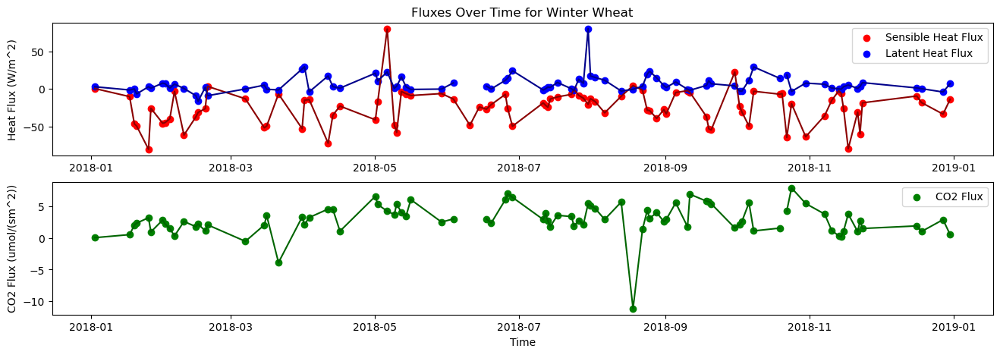
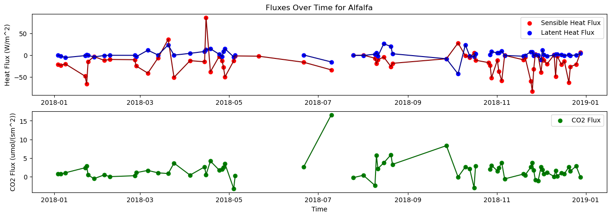
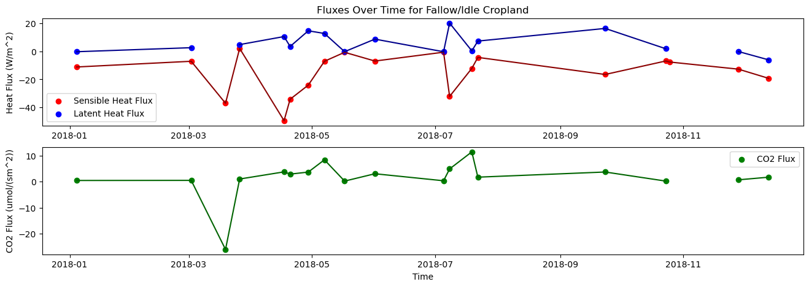
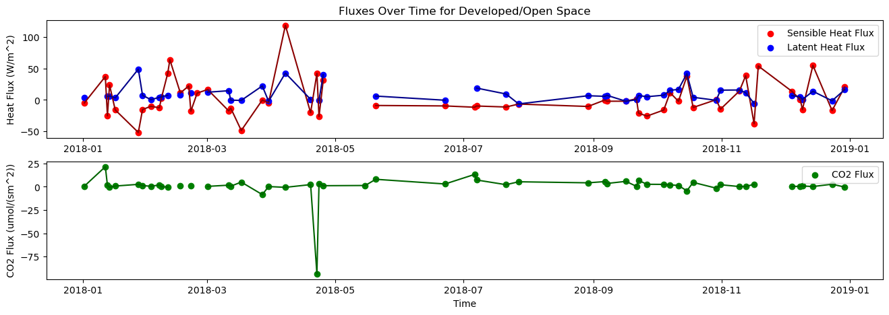
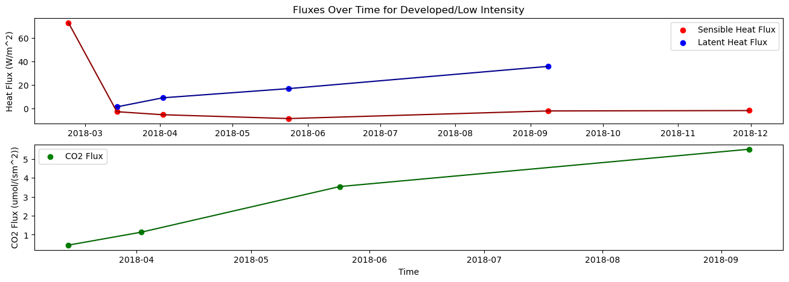
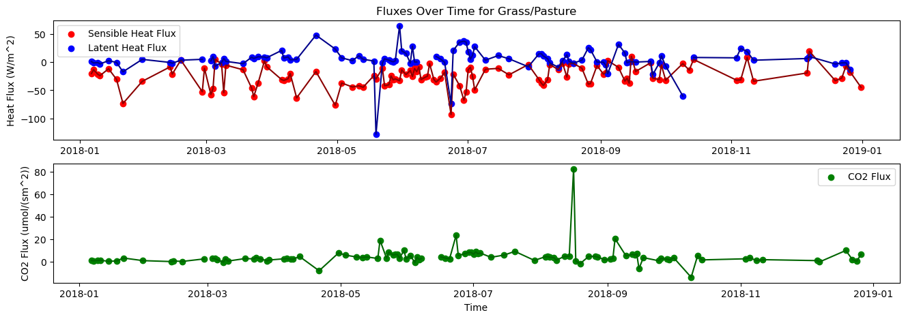
#Histograms
for x in range(0, len(crop_list)):
ds3 = ds2.where(ds2.crop_type == f'{crop_list[x]}')
hist = act.plotting.HistogramDisplay({f'{crop_list[x]}': ds3}, subplot_shape=(1,3), figsize=(19, 5))
hist.plot_stairstep_graph('sensible_heat_flux', dsname=f'{crop_list[x]}', subplot_index=(0,0), label=f'{crop_list[x]}')
hist.plot_stairstep_graph('latent_heat_flux', dsname=f'{crop_list[x]}', subplot_index=(0,1), label=f'{crop_list[x]}')
hist.plot_stairstep_graph('co2_flux', dsname=f'{crop_list[x]}', subplot_index=(0,2), label=f'{crop_list[x]}')
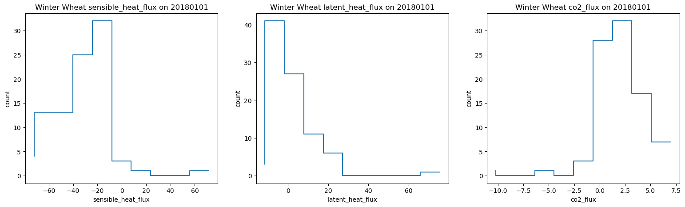
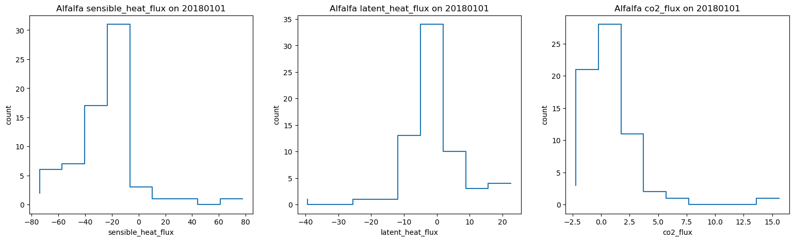
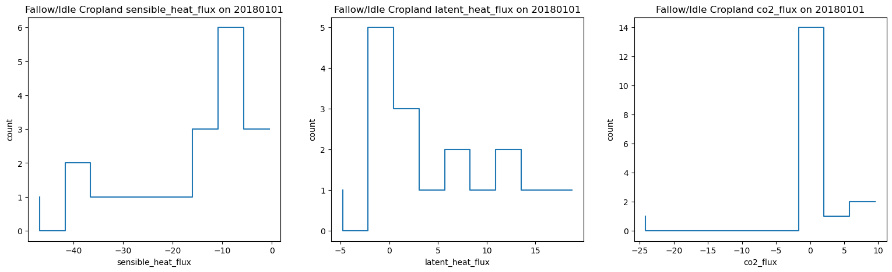
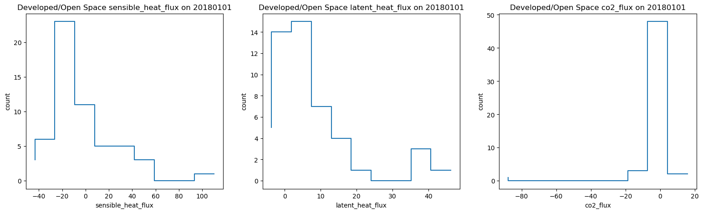
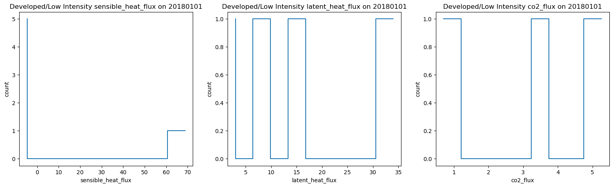
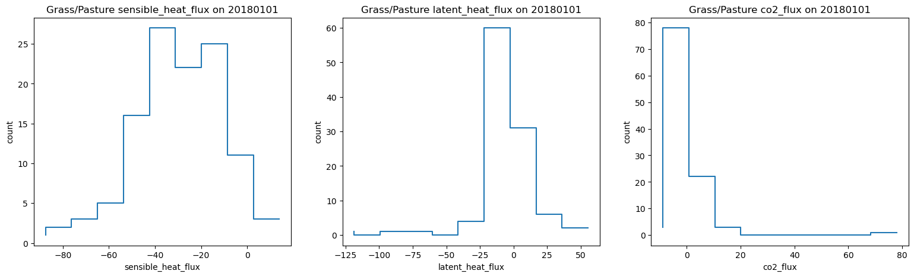
#Polar Coordinate Graphs
for x in range(0, len(crop_list)):
ds3 = ds2.where(ds2.crop_type == f'{crop_list[x]}')
display = act.plotting.WindRoseDisplay({f'{crop_list[x]}': ds3},
subplot_shape=(1,3), figsize=(16,6))
display.plot_data('wdir2', 'wspd2', 'sensible_heat_flux', num_dirs=12, plot_type='contour',
dsname=f'{crop_list[x]}', subplot_index=(0,0), contour_type='mean', num_data_bins=10,
clevels=21)
display.plot_data('wdir2', 'wspd2', 'latent_heat_flux', num_dirs=12, plot_type='contour',
dsname=f'{crop_list[x]}', subplot_index=(0,1), contour_type='mean', num_data_bins=10,
clevels=21)
display.plot_data('wdir2', 'wspd2', 'co2_flux', num_dirs=12, plot_type='contour',
dsname=f'{crop_list[x]}', subplot_index=(0,2), contour_type='mean', num_data_bins=10,
clevels=21)
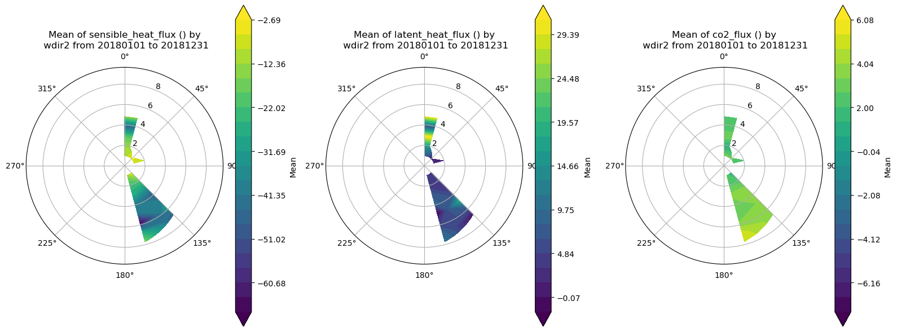
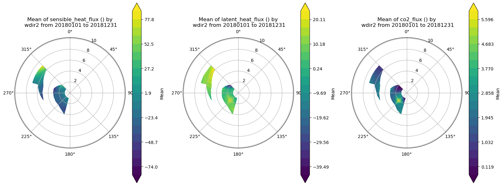
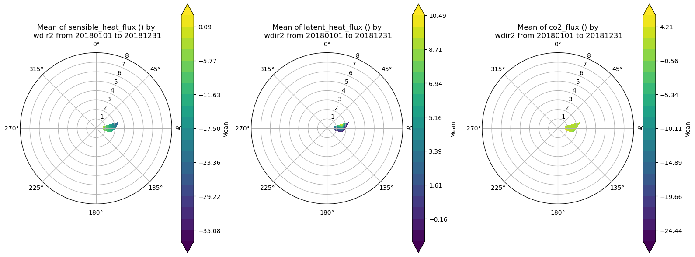
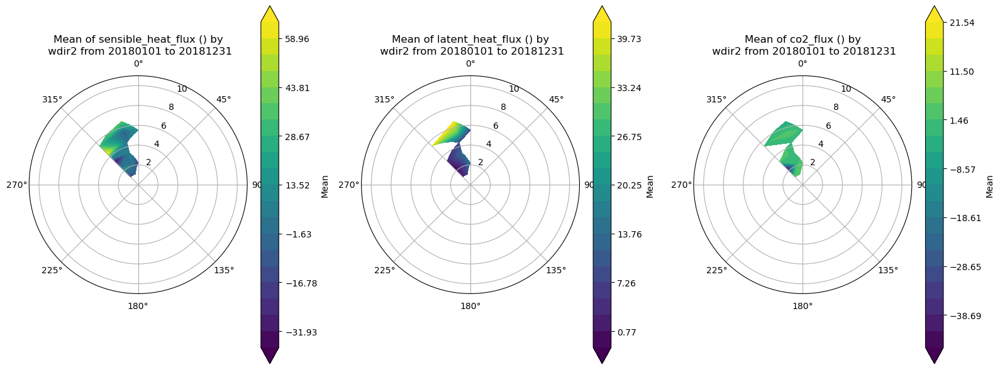
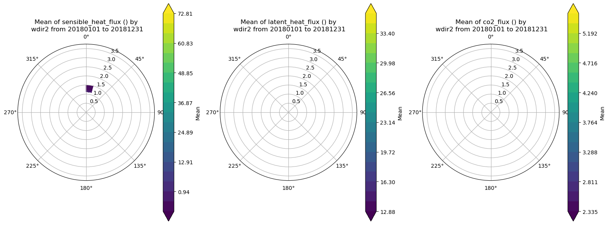
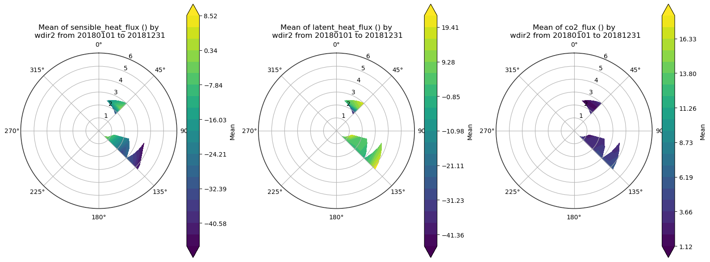